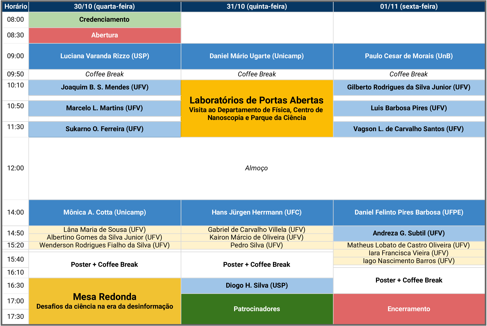

Livro de Resumos do VI Simpósio da Pós-Graduação em Física/UFV
30 de outubro a 01 de novembro de 2024
Programa de Pós-Graduação em Física da Universidade Federal de Viçosa (UFV) | ufv2024.simposiofisica.com
O Programa de Pós-Graduação em Física da UFV realiza em 2024 o VI Simpósio da Pós-Graduação em Física - UFV. O objetivo deste simpósio é promover a troca de experiência entre estudantes e reconhecidos pesquisadores do cenário nacional. O evento tem como público alvo estudantes de graduação e de pós-graduação do curso de Física e áreas afins, bem como estudantes do ensino médio da rede pública e privada. As atividades propostas para o simpósio incluem palestras por professores convidados, apresentações orais de discentes, sessão de pôsteres, laboratórios de portas abertas e mesa-redonda.
Cronograma

Mapa do evento
Quarta-feira, 30 de outubro de 2024
Mesa Redonda
ME1-01 – Mesa redonda: Desafios da ciência na era da desinformação
Num brevíssimo resumo, apresentaremos uma visão simples do processo científico e seus métodos, para nortear o debate. Alguns aspectos de desinformação em áreas como saúde, história, ciências sociais, e especialmente Física serão apresentados. Por fim, abordaremos possíveis causas do espalhamento e “fé” na desinformação dentro da sociedade, de modo a iniciar o debate.
Mediador: Leonardo A. M. Souza (UFV-CAF)
Membros: Luciana Varanda Rizzo (USP), Mônica A. Cotta (Unicamp), Rodrigo B. Capaz (UFRJ)
Convidados Externos
CE1-01 – As instalações abertas e a pesquisa no Laboratório Nacional de Nanotecnologia (Rodrigo B. Capaz)
Rodrigo B. Capaz, Universidade Federal do Rio de Janeiro (UFRJ) | rodrigo.capaz@lnnano.cnpem.br
Nesta palestra iremos descrever de forma amplas as instalações abertas para usuários externos do Laboratório Nacional de Nanotecnologia e algumas das linhas de pesquisa lá realizadas. Em particular, descreveremos nossa atuação nas áreas de energias renováveis (H2 de baixo carbono), materiais renováveis, sensores e biossensores, nanotoxicologia e tecnologias quânticas.
CE1-02 – Está no ar: a física dos aerossóis atmosféricos (Luciana Varanda Rizzo)
Luciana Varanda Rizzo, Universidade de São Paulo (USP) | lrizzo@usp.br
Aerossóis são partículas sólidas ou líquidas em suspensão na atmosfera, com diâmetros aerodinâmicos que variam desde alguns nanômetros até dezenas de micrometros. São emitidos por uma grande variedade de fontes naturais e antrópicas, e também podem ser produzidos na atmosfera a partir de reações químicas. Através da interação direta e indireta com a radiação solar, os aerossóis influenciam o balanço de energia do planeta, com um efeito predominante de resfriamento da superfície terrestre, compensando parcialmente o aquecimento causado pelos gases de efeito estufa. Os aerossóis influenciam propriedades microfísicas das nuvens e participam da ciclagem de nutrientes em ecossistemas. Os aerossóis também impactam a saúde humana, deteriorandoa qualidade do ar e atuando como via de transmissão de agentes infecciosos. Os impactos dos aerossóis dependem de suas propriedades físicas e químicas, que estão em constante transformação na atmosfera. Nestapalestra, mostrarei como a Física aplicada à atmosfera pode contribuir para a compreensão dos impactos dos aerossóis sobre o meio ambiente, sob uma perspectiva interdisciplinar. Mostrarei resultados de pesquisas recentes sobre a caracterização de aerossóis e seus processos dinâmicos na floresta Amazônica e em áreas urbanas como a região metropolitana de São Paulo.
CE1-03 – Adesão bacteriana e formação de biofilmes: o que podemos aprender modelando materiais e interfaces? (Mônica A. Cotta)
Mônica A. Cotta, Universidade Estadual de Campinas (Unicamp) | monica@ifi.unicamp.br
A sinalização e a atividade de células bacterianas na nanobiointerface são informações importantes para o desenvolvimento de novas gerações de ferramentas de diagnóstico inteligentes ou para encontrar novos alvos para a prevenção de infecções relacionadas a biofilmes. Nos últimos anos, estudamos extensivamente o ciclo de vida bacteriano da Xylella fastidiosa, um patógeno de plantas economicamente importante que afeta culturas em todo o mundo. A patogenicidade desse microorganismo está relacionada a biofilmes formados nos vasos do xilema e ao estresse hídrico que eles criam, o que tem um grande impacto na produtividade agrícola. Neste seminário, discutiremos diferentes plataformas de materiais para entender melhor a interação da X. fastidiosa com superfícies e os mecanismos-chave envolvidos na formação do biofilme.
Convidados Internos
CI1-01 – O fazedor de montículos (Marcelo Lobato Martins)
Marcelo Lobato Martins, Universidade Federal de Viçosa (UFV) | mmartins@ufv.br
No passado longínquo a humanidade cozia barro fofo ou lascava pedras e ossos para construir seus artefatos. Muitos milênios depois, nossos artefatos mais avançados têm componentes moldados em dimensões moleculares. Fabricar nessa escala exige dominar a arte de crescer montículos em ateliês apropriados. Um desafio especial, considerando-se a engenharia de tecidos, é crescer estruturas ramificadas inorgânicas similares àquelas geradas na morfogênese biológica. Nesta apresentação discutiremos o potencial dos passeios aleatórios com ramificação e aniquilação para fabricar morfologias ramificadas.
CI1-02 – Crescimento de heteroestruturas e materiais 2D por epitaxia de feixe molecular (Sukarno Olavo Ferreira)
Sukarno Olavo Ferreira, Universidade Federal de Viçosa (UFV) | sukarno@ufv.br
Neste seminário faremos uma revisão do crescimento e das propriedades de heteroestruturas baseadas nos elementos Cd, Te e Mn, e de compostos isolantes topológicos baseados em Bi, Mn e Te sobre substratos de Silício e GaAs, utilizando a técnica de epitaxia por feixes moleculares (MBE). Os modos de crescimento observados e sua relação com a diferença de parâmetro de rede entre o composto depositado e o substrato tanto no caso da deposição heteroepitaxial tradicional quanto no caso de materiais bidimensionais, caracterizados por ligações de van der Waals. As amostras são caracterizadas por difração de raios-x de alta resolução (HR-XRD), microscopia de eletrônica de varredura (FEG-SEM), microscopia de eletrônica de transmissão de alta resolução (HR-TEM), microscopia de força atômica (AFM) e fotoluminescência (PL) e medidas de transporte elétrico. Os filmes finos podem ser processados para a obtenção de nanomembranas e nano tubos e transferidos para outros substratos, permitindo a fabricação de dispositivos em substratos virtuais.
Apresentações orais
A1-01 – Cinética de cristalização molecular e a influência da viscosidade do solvente (Lâna Maria de Sousa)
Lâna Maria de Sousa, Universidade Federal de Viçosa (UFV) | lana.sousa@ufv.br
Autores: Lâna Maria de Sousa - Universidade Federal de Viçosa (UFV), Leandro Gutierrez Rizzi - Universidade Federal de Viçosa (UFV)
A cristalização desempenha um papel crucial na formação de cristais fibrilares em diversas patologias, como gota e catarata, contribuindo significativamente para o agravamento dessas doenças [1,2]. Diante das limitações de abordagens teóricas anteriores em descrever todas as características observadas experimentalmente na cinética de crescimento em sistemas com diferentes concentrações de sementes, propomos uma nova abordagem baseada na equação mestra. Essa modelagem cinética simplificada permite reproduzir qualitativamente características observadas em experimentos. Os resultados indicam que a cinética de cristalização é inversamente proporcional à viscosidade do solvente e é diretamente proporcional à supersaturação inicial. Além disso, a modelagem revela regimes distintos de crescimento para concentrações altas e baixas de sementes, ampliando o entendimento do processo de cristalização em sistemas biológicos complexos [3].
[1] H. M. Burt, Y. C. Dutt. Growth of monosodium urate monohydrate crystals: effect of cartilage and synovial fluid components on in vitro growth rates. Ann. Rheum. Dis. 45 (1986) 858-864.
[2] H. M. Burt, Y. C. Dutt. Crystallization of monosodium urate monohydrate. Journal of crystal growth 94 (1989) 15-22.
[3] Sousa, L. M., L. G. Rizzi. Effects of the concentration of seeds, finite time-dependent supersaturations, and viscosity on the crystallization kinetics of monosodium urate monohydrate. Journal of Molecular Modeling 30 (2024) 1-9.
A1-02 – Melhoria da estabilidade térmica de skyrmions induzida pela curvatura (Albertino Gomes da Silva Junior)
Albertino Gomes da Silva Junior, Universidade Federal de Viçosa (UFV) | albertino.junior@ufv.br
Autores: Albertino Gomes da Silva Junior - Universidade Federal de Viçosa (UFV), Jakson Miranda Fonseca - Universidade Federal de Viçosa (UFV), Jose Ignacio Costilla Pinedo - Universidade Federal de Viçosa (UFV), Maxwell Marcelino do Amaral - Universidade Federal de Viçosa (UFV), Alejandro Riveros Rodríguez - Universidad Central de Chile, Vagson Luiz de Carvalho Santos - Universidade Federal de Viçosa (UFV)
Este estudo investiga a estabilidade térmica de skyrmions em sistemas magnéticos curvos gaussianos, destacando a curvatura da superfície como um fator crucial. Nossos resultados indicam que skyrmions em superfícies côncavas apresentam uma estabilidade significativamente maior do que aqueles em superfícies convexas. Observamos que, com a diminuição do raio de curvatura, a barreira de energia de contração se reduz, resultando em mudanças na estabilidade dos skyrmions em geometrias convexas; o potencial entre os skyrmions transita de repulsivo para atrativo. Essa transição sugere a existência de um valor limite onde a combinação do raio de curvatura e a geometria da superfície provoca um comportamento esférico, tornando a energia do skyrmion independente de sua posição. Além disso, demonstramos que os skyrmions são estáveis no centro da saliência gaussiana, apresentando uma vida útil na ordem de meses à temperatura ambiente antes de serem aniquilados por contração do núcleo devido a flutuações térmicas. Isso contrasta fortemente com a curta estabilidade observada em discos planos, onde a vida útil é de apenas alguns nanosegundos, rapidamente aniquilada por flutuações térmicas nas bordas. Os resultados foram publicados no Journal of Applied Physics e estamos preparando novos artigos que explorarão as implicações práticas e teóricas dessas descobertas, visando o desenvolvimento de dispositivos magnéticos mais eficientes e de melhor desempenho, fundamentais para tecnologias futuras.
A1-03 – Detection of magnetoelastic waves in biosensors: modeling, characterization, and instrumentation (Wenderson Rodrigues Fialho da Silva)
Wenderson Rodrigues Fialho da Silva, Universidade Federal de Viçosa (UFV) | wenderson.f@ufv.br
Autores: Wenderson R. F. da Silva - Universidade Federal de Viçosa (UFV), Joaquim B. S. Mendes - Universidade Federal de Viçosa (UFV)
This work aimed to investigate the amorphous ferromagnetic alloy Fe_{40}Ni_{38}Mo_4B_{18} for the development of magnetoelastic (ME) biosensors targeted at the serodiagnosis of COVID-19 and other sensor applications. The study presents a theoretical model that describes the ME properties of the material and analyzes its behavior under different conditions, with the model parameters obtained through experimental characterizations. A significant result of this research was the development of a new ME biosensor for the serodiagnosis of COVID-19 (doi.org/10.1016/j.bios.2024.116456), published in a high-impact journal and awarded as the best work presented in the field of magnetism at the 2024 Autumn Meeting of the Brazilian Physical Society. Additionally, a portable, low-cost detection device was developed, accompanied by the graphical user interface GUI) software MagWaveScan, which allows for reading, control, and processing of signals in ME sensors; both items are protected by patents (Hardware: BR102024008915-4; Software: BR512024000754-7). This device was also published in a traditional journal in the field of measurement devices (doi.org/10.1016/j.measurement.2024.115819). Other applications are under development, including a study on the deposition dynamics of the Thionine molecule on the ME sensor surface, submitted to ACS Applied Bio Materials and currently under review. We also propose replacing Au with graphene in sensors for the serodiagnosis of COVID-19, aiming to understand how graphene’s surface affects the biosensor’s sensitivity compared to Au. This work is already in its final writing phase. In conclusion, the research fostered interdisciplinary collaborations among departments at UFV and other institutions, including UFOP and UFMG, significantly contributing to the scientific, technological, and innovative advancement in the field of Devices and Sensors at DPF-UFV, driving the development of new solutions and expanding the application prospects of ME biosensors.
Pôsteres
P1-01 – Cell self-organization in culture: from chance to motility cell-induced gradients (Kelly Aparecida Molica)
Kelly Aparecida Molica, Universidade Federal de Viçosa (UFV) | kelly.molica@ufv.br
Autores: Kelly Aparecida Molica - Universidade Federal de Viçosa (UFV), Marcelo Lobato Martins - Universidade Federal de Viçosa (UFV)
This work proposes a hybrid agent-based model for the cell aggregation observed in monolayer culture. We considered the simplest candidate for this system to be CCA (Cluster Cluster Aggregation) and included the actions death, replication, shedding, transformation, and movement guided by chemical signals (chemotaxis). We investigated the effects the actions in the CCA, focusing on the pattern of the structures generated in the simulation and on the evolution of the aggregates over time. The results show that in the original model, the aggregate shapes are branched, and the size distribution functions (number of aggregates of size s at time t) exhibit power law behavior for some regimes. The addition of replication modifies the pattern of the aggregate structures, which become larger quickly and have more compact shapes. The shedding of particles promotes the formation of small aggregates around the original cluster from which they detached. The distribution function presents a power law regime but with a different exponent from the CCA. We consider all actions and change the brownian motion of the aggregates to a chemotactic motion via the diffusion equation. It was observed that chemotaxis alters the dynamics of aggregate formation, since the effect of larger aggregates attracting smaller ones occurs, and aggregation occurs rapidly since the movement is not random. The distributions change their behavior, and and transition from an exponential regime to a bell-shaped one. Finally, transformed particles detach from the aggregate and move against the gradient of chemical signals. This action alters the pattern of structures that present branched aggregates with transformed particles around them. The size distribution functions do not present a power-law regime. This work developed a biologically motivated aggregation model to reproduce the main mechanisms present in the dynamics of cell aggregation in monolayer culture. Acknowledgments: Fapemig, Capes and CNPq.
P1-02 – Interação DNA Ligantes: Corante Azure A (Arthur Gomes Soares de Rezende)
Arthur Gomes Soares de Rezende, Universidade Federal de Viçosa (UFV) | arthur.g.rezende@ufv.br
Autores: Arthur Gomes Soares de Rezende - Universidade Federal de Viçosa (UFV), Ethe de Araújo Portilho - Universidade Federal do Maranhão (UFMA), Márcio Santos Rocha - Universidade Federal de Viçosa (UFV)
O tratamento de alguns tipos de câncer baseia-se na interação direta do DNA com determinados fármacos, como cisplatinas, fotossensibilizadores e corantes. Entre esses compostos, os corantes fenotiazínicos destacam-se devido às suas diversas aplicações, que incluem o uso como marcadores biológicos, células solares e terapia fotodinâmica. No entanto, a interação desses corantes com a macromolécula de DNA ainda é pouco compreendida na literatura, especialmente em estudos que envolvem a análise de moléculas individuais. Este trabalho investiga de forma pioneira a interação do corante fenotiazínico Azure A com a molécula de DNA, utilizando a técnica de pinça óptica. O estudo é conduzido em dois meios com diferentes forças iônicas (10 mM e 150 mM), o que permite avaliar como as condições iônicas afetam essa interação. Por meio das variações nos parâmetros mecânicos do DNA, foi possível determinar parâmetros físico-químicos de equilíbrio da interação corante-DNA, utilizando uma isoterma de ligação apropriada. Esses resultados podem contribuir significativamente para o entendimento dos mecanismos de interação de compostos fenotiazínicos com o DNA, fornecendo resultados valiosos tanto para a biotecnologia quanto para o desenvolvimento de terapias baseadas em interação molecular.
P1-03 – The quantum Jackiw-Pi model (Emilio Drumond Pereira)
Emilio Drumond Pereira, Universidade Federal de Viçosa (UFV) | emilio.drumond@ufv.br
Autores: Emílio D. Pereira - Universidade Federal de Viçosa (UFV), Thadeu S. Dias - Universidade Federal de Viçosa (UFV), Daniel O. R. Azevedo - Universidade Federal de Viçosa (UFV), Oswaldo M. Del Cima - Universidade Federal de Viçosa (UFV)
It is a fact that the study of gauge field theories has had a great impact on physics, especially with the standard model of particle physics. Particularly in three space-time dimensions, the study of these theories also allowed the understanding of condensed matter phenomena, such as the quantum Hall effect and high-temperature superconductivity and systems such as graphene and topological insulators. An intriguing scenario involves constructing a massive model that exhibits both gauge and parity symmetry. Thus, in 1997, R. Jackiw and So-Young Pi by breaking the Yang-Mills paradigm (non-abelian generalizations of abelian models) formulated a tri-dimensional massive gauge theory which, unlike the Chern-Simons theory, preserve parity symmetry. However, as stated by the authors of the theory, establishing a gauge-fixing would be unfeasible and therefore, its quantization would not be possible. A few years later, the gauge-fixing problem was solved using the Becchi-Rouet-Stora (BRS) formalism. Therefore, in addition to carrying out the classical study of the model, in this work we use the algebraic method of BRS renormalization to investigate its quantization. With this, we find that the Jackiw-Pi model is free of anomalies in all orders in perturbation theory and all its symmetries can be extended to the quantum level. Furthermore, it exhibits multiplicative renormalizability and the \beta-functions associated to the coupling constants, mass term, and the anomalous dimensions of all the quantum fields vanish.
P1-04 – Efficiency of spin-to-charge current interconversion in the organic conducting polymers Polyaniline and PEDOT:PSS (Robson C.O. Guedes)
Robson C.O. Guedes, Universidade Federal de Viçosa (UFV) | robson.cesar@ufv.br
In our work, we reported the efficiency of spin-to-charge current conversion in polyaniline (PANI) and PEDOT:PSS. This study presents an investigation into the transport of spin currents and their conversion to charge currents in this class of conducting organic polymers. The study explores the potential applications of those polymers in spintronics by calculating the Spin Hall angle by utilizing the Spin Seebeck Effect (SSE) and Spin Pumping Ferromagnetic Resonance techniques. We prepared a thin layer of PANI by dissolving a few milligrams of PANI in an aqueous solution of formic acid and spin-coated it onto an Yttrium Iron Garnet (YIG) substrate. The PANI film was then immersed in sulfuric acid to enhance its electrical conductivity before depositing a Platinum film on top through sputter deposition. Using this procedure, we fabricated the Pt/PANI/YIG heterostructure. In the experiments, we generated spin currents in the YIG film by SSE. These spin currents were injected through the YIG/PANI interface, traversed the PANI layer, and were converted into charge currents in the Platinum layer via the Inverse Spin Hall effect. Another intriguing result was that the conversion of spin-to-charge currents was directly detected on the PANI layer, and the voltage measured on the PANI layer is greater than measured on the pt layer. These results confirm that PANI can successfully transport spin currents, showing its potential for spintronics applications. The results revealed that PANI has a potential for application in organic spintronics devices, due to the efficient spin-to-charge current conversion. PANI’s long spin-relaxation lifetimes, insulator-to-metal transition, flexibility, stability and large spin diffusion make it a promising candidate for spin transport applications in low power spintronic devices. The PANI results were published in DOI: 10.1016/j.jmmm.2021.168635. At this moment, we are working in the PEDOT:PSS data.
P1-05 – Fotoluminescência de Pontos Quânticos de Carbono Obtidos a Partir de Negro de Carbono (Juliano Fernandes Teixeira)
Juliano Fernandes Teixeira, Universidade Federal de Viçosa (UFV) | juliano.teixeira@ufv.br
Autores: Juliano Fernandes Teixeira - Universidade Federal de Viçosa (UFV), Eduardo Nery Duarte de Araújo - Universidade Federal de Viçosa (UFV), Mariana da Costa Novo Pimenta Brandão - Universidade Federal de Viçosa (UFV), Alvaro Vianna Novaes de Carvalho Teixeira - Universidade Federal de Viçosa (UFV)
Pontos quânticos de carbono (Cdots) foram acidentalmente produzidos em 2004, durante a purificação de nanotubos de carbono usando ácido nítrico. Os Cdots são nanopartículas de tamanhos menores que 10 nm. Por serem predominantemente composto por carbono, os Cdots têm a vantagem de possuir baixa toxicidade e baixo impacto ambiental. Eles já são usados células solares, diodos emissores de luz (LEDs) e como marcadores biológicos. Sua principal característica de fotoluminescência ainda não é totalmente explicada. Muitos trabalhos mostram que sua emissão é devido ao confinamento quântico de nanoílhas de grafeno. Outros trabalhos mostram que sua emissão não é dependente do tamanho e que grupos químicos na superfície melhor explica a origem da emissão. Esse tópico em aberto, nos motivou a estudar a emissão de pontos quânticos de carbono produzidos a partir de negro de carbono. Para isso, o negro de carbono foi atacado usando ácido nítrico a uma temperatura de ~ 100 ºC e ao longo de 300 horas de síntese. O sobrenadante com Cdots foi coletado e submetido a processos de neutralização de pH, purificação e separação. Os Cdots foram caracterizados por medidas de absorbância, fluorescência, microscopia de força atômica (AFM) e espectroscopia no infravermelho por transformada de Fourier (FTIR). Os resultados mostram que a sua emissão é independente do tempo de síntese e do comprimento de onda de excitação. Seu espectro é composto por duas emissões intensas em 505 nm e 563 nm, e emissões secundárias com picos localizados aproximadamente em 372 nm, 391 nm, 408 m, 431 nm e 456 nm. Medidas de AFM mostraram que o tamanho dos Cdots diminui com o tempo de síntese. Como a diminuição do tamanho não afetou a sua emissão, o efeito de confinamento quântico não explica completamente a emissão. As medidas de FTIR, mostraram que os Cdots possuem grupos amina, nitrila, compostos aromáticos, grupos carboxílicos e compostos com nitrogênio.
P1-06 – Growth of Bi_2Te_3 on GaAs(100) Substrates: A Systematic Study and Characterization (Wesley Fiorio Inoch)
Wesley Fiorio Inoch, Universidade Federal de Viçosa (UFV) | wesley.inoch@ufv.br
Autores: Wesley F. Inoch - Universidade Federal de Viçosa (UFV), S. L. A. Mello - Universidade Federal de Viçosa (UFV), Sukarno O. Ferreira - Universidade Federal de Viçosa (UFV), Leonarde N. Rodrigues - Universidade Federal de Viçosa (UFV)
Thin layers of a topological insulator Bi_2Te_3 were grown on GaAs(100) substrates using molecular beam epitaxy with bismuth telluride and tellurium effusion cells. In this study, we present the systematic growth varying the substrate temperature and film thickness, including the study of the early stages of formation film. The structural properties of the sample were measured in the high-resolution diffractometer using measurement of \omega – 2\theta scans and reciprocal space maps around asymmetric and asymmetric Bragg reflections. Film roughness and morphology were evaluated using atomic force microscopy, revealing high symmetric pyramidal surface structures were observed only for a narrow range of subtract temperature and film thicknesses. Scanning tunneling spectroscopy spectrums confirm the presence of the topological surface states, further validating the quality and properties of the Bi_2Te_3 films.
P1-07 – Síntese e caracterização de filmes de granadas de Túlio e Ferro (TIG) crescidas por RF-sputtering para aplicações em spintrônica (Isabella Moraes de Melo)
Isabella Moraes de Melo, Universidade Federal de Viçosa (UFV) | isabella.melo@ufv.br
Autores: Isabella Moraes de Melo - Universidade Federal de Viçosa (UFV), Joaquim Bonfim Santos Mendes - Universidade Federal de Viçosa (UFV), Rafael Otoniel Ribeiro Rodrigues da Cunha - Universidade Federal de Viçosa
A spintrônica é um campo crucial para o avanço de tecnologias inovadoras, focando na manipulação do spin dos elétrons para armazenamento e transporte de informação. A criação de heteroestruturas magnéticas combinando materiais não magnéticos (NM) com isolantes ferrimagnéticos (FMI) oferece uma plataforma versátil para explorar fenômenos spintrônicos. As Granadas de Ferro e Terras Raras (RIGs) são materiais promissores para uso como FMI devido à sua baixa constante de amortecimento, ideal para estudos de transporte de spin. As Granadas de Ferro e Túlio (TIG) com Anisotropia Perpendicular Magnética (PMA) mostram grande potencial para estudos de efeitos de spin, devido à sua constante de magnetostrição negativa e alta qualidade estrutural e magnética. Este trabalho apresenta os resultados do processo de fabricação e caracterização de filmes de TIG em substrato de GGG (Granada de Gadolíneo e Gálio - Gd3Ga5O12), com orientação (111), depositados por RF-sputtering à temperatura ambiente, seguidos de tratamento térmico em atmosfera reativa de oxigênio. O objetivo principal foi entender como as condições de deposição e tratamento térmico influenciam nas propriedades morfológicas e cristalinas das amostras. A difração de raios X mostrou a formação de filme monocristalino de TIG (111) após o tratamento térmico. A Microscopia de Força Atômica (AFM) revelou uma superfície granular com rugosidade média de 1,2 nm. As caracterizações por magnetometria de amostra vibrante (VSM) e por Ressonância Ferromagnética (FMR) revelaram propriedades de histerese, campo de ressonância e largura de linha compatíveis com as esperadas para filmes de TIG monocristalinos. A qualidade cristalina, morfológica e magnética, tornam os filmes de TIG produzidos neste trabalho promissores para o desenvolvimento de dispositivos spintrônicos.
P1-08 – O problema dos anéis em buscas aleatórias em duas dimensões (Jandson Fahel Oliveira de Freitas)
Jandson Fahel Oliveira de Freitas, Universidade Federal de Viçosa (UFV) | jandson.freitas@ufv.br
Autores: Jandson Fahel Oliveira de Freitas - Universidade Federal de Viçosa (UFV), Marcos Gomes Eleuterio da Luz - Universidade Federal do Paraná (UFPR), Madras Viswanathan Gandhi Mohan - Universidade Federal do Rio Grande do Norte (UFRN), Anderson de Souza Bibiano Filho - Universidade Federal de Pernambuco (UFPE), Ernesto Carneiro Pessoa Raposo - Universidade Federal de Pernambuco (UFPE)
Neste trabalho, apresentamos resultados analíticos e numéricos de um caminhante aleatório no espaço bidimensional (2D), sujeito a condições de contorno absorventes na forma de dois anéis concêntricos, que interrompem a caminhada ao serem tocados. O problema dos anéis representa uma espécie de abordagem de campo médio ao problema das buscas aleatórias em 2D, uma vez que passos com tamanho superior ao diâmetro do anel externo não são permitidos. No problema dos anéis, o caminhante inicia sua trajetória na posição inicial x_0, entre dois anéis concêntricos, sendo o anel interno de raio a e o externo de raio R. Ao longo de sua caminhada, o buscador move-se até encontrar um dos anéis, com os tamanhos \ell dos passos sorteados de acordo com uma distribuição p(\ell), do tipo lei de potência com expoente \alpha+1, correspondente à aproximação para \ell \gg 1 da distribuição \alpha-estável de Lévy. O problema dos anéis mostrou-se importante para o estudo das buscas aleatórias em 2D, quando o objetivo é analisar a relação de encontro entre o alvo mais próximo e os que estão mais distantes da posição inicial. Apresentamos resultados numéricos sobre a eficiência de busca \eta no limite destrutivo, o tempo médio de primeira passagem \langle t \rangle, e as probabilidades de encontrar os anéis interno e externo, respectivamente P_{int} e P_{ext}. No regime não-destrutivo, encontramos que a eficiência é maximizada para \alpha \to 1, enquanto no regime destrutivo é maximizada no limite balístico \alpha \to 0. Verificamos que P_{ext} > P_{int} antes do cruzamento das probabilidades e P_{ext} < P_{int} após, quando mantemos \alpha fixo. Além disso, encontramos que, para x_0/R fixo, \langle t \rangle aumenta com \alpha, e para \alpha fixo, \langle t \rangle cresce com o afastamento de x_0 do anel interno. O problema dos anéis é uma alternativa interessante ao estudo de buscas aleatórias no espaço 2D livre.
P1-09 – Epidemic activity on multigraphs (Paulo Henrique Lorenzoni Filho)
Paulo Henrique Lorenzoni Filho, Universidade Federal de Viçosa (UFV) | phlorenzoni@hotmail.com
Autores: Paulo Henrique Lorenzoni Filho - Universidade Federal de Viçosa (UFV), Wesley Cota - Universidade Federal de Viçosa (UFV), Silvio C. Ferreira - Universidade Federal de Viçosa (UFV) e Instituto Nacional de Ciência e Tecnologia de Sistemas Complexos - INCT - SC
Epidemic spreading on random networks with arbitrary degree distributions are proxies for comparisons with theoretical approaches as heterogeneous mean-field theories. Multigraphs are networks with multiple connections between pairs of nodes. Networks with a power law P(k) \sim k^{-\gamma} degree distribution exhibit a natural cutoff k_N\sim N^\frac{1}{\gamma-1}. It can be generated using the Configuration Model introduced by Molloy and Reed. Depending on the size N or \gamma values, connectivity issues may arise for networks that can have only a single connection between pairs, i.e., simple graphs. On the one hand, the algorithm may not complete all connections, resulting in high computational cost. On other hand, allowing multiple connections enables networks to be generated without such issues. Therefore, motivated by a methodological perspective, this study proposes epidemic spreading on both simple networks and multigraphs with k_{max} \sim k_N. We performed quasi-stationary (QS) analysis to measure the epidemic threshold, density of infected individuals, dynamical susceptibility and inverse participation ratio (IPR) using Optimized Gillespie Algorithm (OGA). In addition, finite-size analyses were performed to compare finite-size scaling (FSS) exponents for both simple and multigraphs. We observed no significant difference between the FSS exponents for Susceptible-Infected-Removed-Susceptible (SIRS), and Contact Process (CP). The ratio between QS quantities for simple and multigraphs exhibits a plateau effect, meaning that the ratio does not scale significantly with the network size. For Susceptible-Infected-Susceptible (SIS), we observed distinct scaling behavior in the presence of strong correlations on simple networks. In conclusion, multigraphs can be used to investigate epidemic spreading on random graphs of arbitrary degree distributions without significant loss of information for SIRS, CP and SIS with weak correlations.
P1-10 – Bifurcations in the Kuramoto model with external forcing and higher-order interactions (Guilherme Henrique da Silva Costa)
Guilherme Henrique da Silva Costa, International Centre for Theoretical Physics - South American Institute for Fundamental Research (ICTP-SAIFR) | guilherme.h.silvacosta@gmail.com
Autores: Guilherme S. Costa - ICTP-SAIFR & IFT-UNESP, Marcel Novaes - Universidade Federal de Uberlândia, Marcus A. M. de Aguiar - Universidade Estadual de Campinas
Synchronization is an important phenomenon in a wide variety of systems comprising interacting oscillatory units, whether natural (like neurons, biochemical reactions, cardiac cells) or artificial (like metronomes, power grids, Josephson junctions). The Kuramoto model provides a simple description of these systems and has been useful in their mathematical exploration. Here we investigate this model combining two common generalizations that can be observed in many systems: external periodic influences and higher-order interactions among the elements. The combination of these ingredients leads to a very rich bifurcation scenario in the dynamics of the order parameter that describes the phase transitions. We found, in particular, that saddle-node, Hopf and homoclinic manifolds are duplicated in regions of parameter space displaying bi-stability.
P1-11 – O Papel da Geometria na Estabilidade dos Bimerons em Nanodiscos Magnéticos (Albertino Gomes da Silva Junior)
Albertino Gomes da Silva Junior, Universidade Federal de Viçosa (UFV) | albertino.junior@ufv.br
Autores: Albertino Gomes da Silba Junior - Universidade Fedral de Viçosa (UFV), Sidnei Fernandes de Souza - Universidade Fedral de Viçosa (UFV), Allison Wagner Teixeira - Universidad de Tarapacá - Instituto de Alta Investigación, Chile, Jakson Miranda Fonseca - Universidade Fedral de Viçosa (UFV), Vagson Luiz de Carvalho Santos - Universidade Fedral de Viçosa (UFV)
O bimeron é uma configuração magnética composta por um meron e um antimeron, resultando em uma estrutura topológica estável em sistemas magnéticos bidimensionais. Enquanto um meron é uma excitação que apresenta uma inversão na magnetização ao redor de um núcleo central, o antimeron possui uma configuração oposta, também invertendo a magnetização, mas de forma a criar uma simetria em relação ao meron. Essa combinação permite que o bimeron tenha características magnéticas robustas. Neste estudo, apresentamos uma análise da estabilidade de bimerons em um disco fino magnético, com magnetização ao longo do eixo \hat{y}. Destacamos a importância da energia dipolar de borda na estabilidade do bimeron, evidenciando que, dependendo do tipo de Dzyaloshinskii-Moriya Interaction (DMI) — interfacial ou bulk —, a orientação dos núcleos em relação ao far field é crucial. Para DMI interfacial, os núcleos devem estar alinhados com o far field, enquanto, para DMI bulk, eles devem ser perpendiculares a esse campo. Nossa análise indica que, com os parâmetros utilizados, o bimeron apresenta uma tendência de estabilidade próxima ao centro do disco, com um leve desvio na direção positiva do eixo \hat{x}. Essa configuração proporciona uma alta estabilidade, caracterizada por uma significativa barreira de energia contra expansão e deslocamento, embora a barreira de energia para a contração do bimeron seja relativamente baixa. Além disso, demonstramos que o bimeron se mantém estável no centro do disco, apresentando uma vida útil na ordem de meses à temperatura ambiente, antes de ser aniquilado devido à contração do núcleo em decorrência de flutuações térmicas.
P1-12 – Transporte de parede de domínio não recíproco induzido por geometria em nano fitas magnéticas (Sidnei Fernandes de Souza)
Sidnei Fernandes de Souza, Universidade Federal de Viçosa (UFV) | sidnei.souza@ufv.br
Autores: Sidnei Fernandes de Souza - Universidade Federal de Viçosa (UFV), Hamilton Teixeira - Universidade Federal de Viçosa (UFV), Clodoaldo Irineu Levartoski de Araujo - Universidade Federal de Viçosa (UFV), Jakson Miranda Fonseca - Universidade Federal de Viçosa (UFV), Vagson Luiz de Carvalho Santos - Universidade Federal de Viçosa (UFV)
Recentemente, [1], demonstraram a existência de um deslocamento na curva de histerese devido à combinação de uma assimetria geométrica em um nano disco e a presença da interação Dzyaloshinskii-Moriya (DMI) Bulk. Este efeito recebeu o nome de DMI Bias. Neste trabalho estendemos o resultado para uma geometria de uma nano fita retangular com corte elíptico, criando a assimetria geométrica, juntamente com a presença de DMI Bulk. Por meio de simulações micromagnéticas, mostramos que o efeito DMI Bias também se manifesta nesse sistema, bem como sua dependência com a assimetria, a intensidade da DMI Bulk e o campo magnético externo perpendicular à fita. Numa segunda etapa, estudamos a dinâmica de uma parede de domínio (PD) do tipo cabeça-com-cabeça nessa nano fita por meio de simulações micromagnéticas. Aplicando um campo magnético no plano, movimentamos a PD de um lado para o outro e concluímos que o transporte é assimétrico, ou seja, a PD se desloca em uma direção, mas não consegue fazer o mesmo quando a direção é invertida para um certo intervalo de campo B_x. Utilizando os parâmetros magnéticos A = 15\times10^{-12} J/m, M_s = 0.9 A/m, D = 1.0 mJ/m² e H_z = 50 mT o intervalo é de 4.0 < |B_x| < 4.5 mT. Assim, esse sistema apresenta um efeito análogo ao de um diodo para PD. Por fim, propomos um modelo teórico que explica os resultados obtidos. Como o efeito é intrínseco ao próprio material e depende apenas de uma assimetria geométrica, torna-se interessante utilizar o efeito DMI Bias para o desenvolvimento de um dispositivo que funcione como um diodo.
[1] S. Castillo-Sepúlveda, R.M. Corona, M. Kiwi, V.L. Carvalho-Santos, D. Altbir. Dzyaloshinskii-Moriya bias in a free-standing asymmetric homogeneous nanodisk, Results in Physics, 56, (2024)
P1-13 – Nanopartículas magnéticas produzidas com baixo custo e em larga escala para aplicações biomédicas (Hamilton Aparecido Teixeira)
Hamilton Aparecido Teixeira, Universidade Federal de Viçosa (UFV) | hamilton.teixeira@ufv.br
Autores: Hamilton A. Teixeira*, Clodoaldo I. Levartoski de Araujo
A configuração de vórtice magnético caracterizada por baixa remanência é uma propriedade desejada para aplicação de nanopartículas na terapia de magneto-hipertermia do câncer. A eletrodeposição se apresenta como a técnica mais adequada para produção de baixo custo e em larga escala em relação aos métodos de fabricação que envolvem várias etapas de litografia e técnica de alto vácuo. O aspecto mais impactante nas nanopartículas hemisféricas desenvolvidas por eletrodeposição apresentadas aqui é o comportamento do vórtice magnético observado para tamanhos médios de 150 nm, que ocorre devido à sua curvatura intrínseca. Esta descoberta contrasta com outros formatos investigados, como semidiscos, que podem conter vórtices em diâmetros maiores, não permitindo endocitose celular, ou nanopartículas superparamagnéticas menores que requerem campos altos para serem ativadas.
Quinta-feira, 31 de outubro de 2024
Visita aos laboratórios
V2-01 – Laboratórios de Portas Abertas
O Laboratório de Portas Abertas é um evento totalmente gratuito, aberto ao público em geral e tem por objetivo mostrar uma física que vai além da sala de aula. O intuito é apresentar à comunidade os Laboratórios do Departamento de Física e o que de mais atual vem sendo desenvolvido em Ciência e Tecnologia. O evento é dedicado a pessoas de todos os níveis de escolaridade. Em particular, para os alunos de ensino médio é uma oportunidade de conhecer um pouco mais sobre a estrutura e experiências científicas, além da multidisciplinaridade através da interação da física com outros campos de conhecimento, como, química, biologia e computação.
Convidados Externos
CE2-01 – Novos paradigmas para o estudo de nanomateriais por Microscopia Eletrônica (Daniel Mario Ugarte)
Daniel Mario Ugarte, Universidade Estadual de Campinas (Unicamp) | dmugarte@ifi.unicamp.br
O interesse gerado pela nanotecnologia induziu um notável progresso na microscopia eletrônica, incluindo desenvolvimentos de óptica de elétrons, automação, reprodutibilidade e detectores de alto desempenho. Até os anos 2000, a microscopia eletrônica de transmissão (MET) era considerada muito útil, porém apenas uma ferramenta de análise qualitativa para a ciência dos materiais. Neste seminário, apresentaremos estudos desenhados para explorar plenamente a capacidade dos poderosos nstrumentos atuais e, a obtenção de novos conhecimentos físico-químico de forma quantitativa, robusta e confiável. Apresentaremos diversos experimentos envolvendo a caracterização físico-química detalhada de nanossistemas (nanopartículas, nanofios, nanotubos etc.); os exemplos foram escolhidos ara estimular uma mudança nas visões relativa ao desenho de projetos envolvendo a moderna e onerosa instrumentação MET, execução e análise de experimentos. Finalmente, gostaríamos de discutir a questão crítica da formação de recursos humanos associada às exploração das complexas técnicas analíticas modernas.
CE2-02 – Rolamentos frustrados (Hans Jürgen Herrmann)
Hans Jürgen Herrmann, Universidade Federal do Ceará (UFC) | hans@fisica.ufc.br
Um rolamento é um sistema de esferas (ou discos) em contato. Em um rolamento pode-se obter “estados de rolamento”, nos quais esferas em contato rolam umas sobre as outras sem deslizamento. Nós frustramos um sistema de esferas em contato ao impor dois estados de rolamento diferentes em lados opostos e procuramos as configurações de menor dissipação de energia. Para atrito de Coulomb (com coeficientes de atrito aleatórios) em duas dimensões, uma linha nítida separa os dois estados de rolamento e provamos que essa linha corresponde ao corte mínimo. No entanto, surpreendentemente, em três dimensões, domínios de rolamento intermediários, que não estão sincronizados com nenhum dos lados, são energeticamente mais favoráveis do que a superfície de corte mínimo. Este novo estado de mínima dissipação é caracterizado por uma rede abrangente de contatos sem deslizamento que atinge cada esfera. Essa situação se torna possível porque, em três dimensões, rolamentos de laços de tamanho quatro possuem quatro graus de liberdade. Ao considerar esferas de diferentes tamanhos, arranjos com estados de rolamento podem até ser feitos de forma a preencher o espaço. A construção e as propriedades mecânicas de tais rolamentos que preenchem o espaço serão discutidas. Estados de rolamento que preenchem o espaço podem ser vistos como uma realização de turbulência sólida exibindo a escala de Kolmogorov e condução de calor anômala. Os estados de rolamento podem ser percebidos como realizações físicas de redes de osciladores com acoplamentos assimetricamente ponderados. Essas redes podem apresentar propriedades de sincronização ótimas através do ajuste da força de interação local em função do grau do nó ou da inércia dos discos rotativos constituintes por meio de uma relação de massa-raio em lei de potência. Como consequência, encontra-se que rolamentos que preenchem o espaço sincronizam mais rápido quando são ocos.
Convidados Internos
CI2-01 – Um estudo da localização em espalhamentos epidêmicos (Diogo Henrique da Silva)
Diogo Henrique da Silva, Universidade de São Paulo (USP) | diogohsilva89@gmail.com
Uma diversidade de epidemias se propagam dentro de comunidades e têm encontrado condições favoráveis para atravessar fronteiras, ganhando um aspecto global. Através da modelagem de espalhamentos epidêmicos, buscamos estudar os aspectos que tornam possível esse fenômeno. Neste seminário, apresentamos um estudo voltado para localização e seus efeitos no espalhamento epidêmico, explorando abordagens teóricas e métodos computacionais.
CI2-02 – Laboratório mineiro de magnetismo e materiais magnéticos multifuncionais (Joaquim Bonfim Santos Mendes)
Joaquim Bonfim Santos Mendes, Universidade Federal de Viçosa (UFV) | joaquim.mendes@ufv.br
Spintrônica e Nanomagnetismo constituem áreas de pesquisa, desenvolvimento e inovação conectadas e responsáveis por avanços na tecnologia e no desenvolvimento científico de áreas como: microeletrônica, ciência de dados, bioengenharia, física médica, telecomunicações, computação e inteligência artificial. As fronteiras do conhecimento nestes campos envolvem processamento de sinais que ocorrem nas escalas temporal ultrarrápida e em dispositivos na escala nanométrica. Portanto, os desafios científicos e tecnológicos podem ser resumidos em duas frentes: (i) Pesquisar e desenvolver materiais avançados, que devido às dimensões reduzidas, exibem fenômenos que só podem ser explicados com auxílio da mecânica quântica, e (ii) Pesquisar e descobrir fenômenos que só se manifestam devido às propriedades únicas desses materiais [1-5]; (iii) desenvolvimento de instrumentação científica e sensores para detecção de agentes de interesse relacionados à segurança alimentar, saúde pública e na agroindústria [6-9]. Pretendemos desenvolver atividades na fronteira do conhecimento, em particular estudaremos propriedades de spin que se manifestam majoritariamente em estruturas bidimensionais, sejam elas camadas atômicas, ou interfaces que se formam em heteroestruturas. A quebra de simetria de translação, que é uma propriedade intrínseca das heteroestruturas, permite que vários fenômenos de interesse se manifestem, tais como: sistemas eletrônicos 2D com forte interação spin-órbita, materiais quânticos e topológicos, materiais magneto-elétricos, óxidos funcionais, etc. Este laboratório pretende unir grupos de pesquisa do estado Minas Gerais que isoladamente desenvolvem atividades nestes temas, para que de maneira sinérgica, unam as suas expertises individuais com o objetivo claro de se posicionar competitivamente no cenário nacional e internacional. Para nosso conhecimento, este será o primeiro laboratório desta natureza no interior do estado de Minas Gerais. A intenção é desenvolver atividades coordenadas em P,D&I agregando as técnicas dos diversos laboratórios envolvidos, aproveitando as experiências dos seus membros para favorecer a formação qualificada de jovens pesquisadores e aumentar o impacto de nossas atividades de pesquisa de maneira e induzir o desenvolvimento de aplicações tecnológicas inovadoras.
As atividades de pesquisa são apoiadas pelas agências de fomento públicas CAPES, FINEP, CNPq/INCT de Spintrônica e Nanoestruturas Magnéticas Avançadas (INCT-SpinNanoMag), FAPEMIG - Rede de Pesquisa em Materiais 2D e Rede de Nanomagnetismo.
[1] MENDES, J. B. S. et al., Unveiling the spin-to-charge current conversion signal in the topological insulator by means of spin pumping experiments. Physical Review Materials, 5, 024206 (2021).
[2] MENDES, J. B. S. et al., Efficient spin-to-charge interconversion in Weyl semimetal TaP at room temperature. Advanced Materials Interfaces 9 (36), 2201716 (2022).
[3] Gomes da Silva, E. et al. Surface-state mediated spin-to-charge conversion in Sb films via bilateral spin current injection. Appl. Phys. Lett. 123, 202402 (2023).
[4] SANTOS, E. et al. Inverse Orbital Torque via Spin-Orbital Intertwined States. Phys. Rev. Applied 19, 014069 (2023).
[5] SANTOS, E. et al. Bulk and Interface Effects Based on Rashba-like States in Ti and Ru Nanoscale-Thick Films: Implications for Orbital-Charge Conversion in Spintronic Devices. ACS Appl. Nano Mater (2024).
[6] SILVA, W. R. F. et al. A biosensor based on magnetoelastic waves for detection of antibodies in human plasma for COVID-19 serodiagnosis. Biosensors and Bioelectronics 261, 116456 (2024).
[7] SILVA, W. R. F.; CUNHA, R.; MENDES, J. B. S. Development of an integrated device based on the gain/phase detector and Arduino platform for measuring magnetoelastic resonance. Measurement, 115819 (2024).
[8] SILVA, W. R. F.; CUNHA, R.; MENDES, J. B. S. (2024) (Pedido/Patente: BR 10 2024 008915-4).
[9] SILVA, W. R. F.; CUNHA, R.; MENDES, J. B. S. (2024) (Pedido/Patente: BR 51 2024 000754-7).
Apresentações orais
A2-01 – Exploring Antiferromagnetic Resonance through Self-Consistent Harmonic Approximation (Gabriel de Carvalho Villela)
Gabriel de Carvalho Villela, Universidade Federal de Viçosa (UFV) | gabriel.villela@ufv.br
Autores: Gabriel de Carvalho Villela - Universidade Federal de Viçosa (UFV), Antônio Ribeiro de Moura - Universidade Federal de Viçosa (UFV)
The Self-Consistent Harmonic Approximation (SCHA) has been successfully applied to determine BKT and quantum phase transitions in low-dimensional magnets. Recently, this formalism has been employed to study Spintronics problems, providing excellent agreement with experimental data. The SCHA approximation offers the advantage of being simpler than other usual interacting spin-wave approaches. The main objective of the present work is to investigate the Antiferromagnetic Resonance (AFMR) using the SCHA. In the semiclassical approach, the SCHA formalism represents the spin components in terms of the canonically conjugate fields (S^z and \varphi), which obey the Poisson bracket \lbrace\varphi_i, S^z_j\rbrace = \delta_{ij}. The quantization of the model can be obtained by promoting the field to operators that follow the usual commutation relation [\varphi_i, S^z_j] = i \delta_{ij}. Therefore, after expanding the spin operators, we obtain a quadratic Hamiltonian endowed with a temperature-dependent renormalization parameter that includes higher-order fluctuations. AFMR experiments involve two magnetic fields. A static magnetic field is used to provide spin alignment, while an oscillating magnetic field induces coherent precession of the spins when the resonance condition is achieved. Depending on the strength of the static field, different phases are observed; an antiferromagnetic (AF) phase for weak fields and a Spin-Flop phase for strong fields. In this synchronous dynamics, the spin operators show minimal uncertainty, behaving as a classical field, which justifies the canonical representation used in the SCHA. In addition, to properly describe the magnetization precession, we adopt Coherent States to determine the thermodynamic averages of the SCHA. Therefore, using the SCHA in association with Coherent States, we have obtained a detailed description of the AFMR, allowing us also to investigate AF Spin Pumping.
A2-02 – Copolímeros de polianilina aplicados em sensores (Kairon Márcio de Oliveira)
Kairon Márcio de Oliveira, Universidade Federal de Viçosa (UFV) | kairon.oliveira@ufv.br
Autores: Kairon Márcio de Oliveira - Universidade Federal de Viçosa (UFV), Konstantin Milakin - Institute of Macromolecular Chemistry (IMC), Patrycja Bober - Institute of Macromolecular Chemistry (IMC), Alvaro Vianna Novaes de Carvalho Teixeira - Universidade Federal de Viçosa (UFV)
Polianilina (PANI) é um conhecido polímero semicondutor que pode alterar suas características condutoras através de processo de dopagem e desdopagem por soluções ácidas e básica, respectivamente. Estas características permitem que estes polímeros sejam aplicados em equipamentos eletrônicos, óticos e sensores eletroquímico. Contudo, uma alternativa para melhorar a aplicabilidade e eficiência da PANI polímero é através da produção de estruturas supramoleculares como: partículas, tubos, bastões, placas e core-shell. A produção destas estruturas ocorre mediante a adição de moléculas anfifílicas (estabilizadores) como surfactantes e polímeros durante a polimerização da anilina, gerando como produto final diferentes morfologias. A influência da adição de um copolímero p-fenilenodiamina (PDA) na síntese da anilina com e sem SDS foi avaliada para tentar melhorar os sensores produzidos anteriormente. Também foi avaliado a substituição do ácido clorídrico como dopante pelo ácido sulfúrico e ácido canforsulfônico. Raman e FTIR mostraram que ocorre a formação de estruturas hibridas de anilina com PDA comprovando a formação de copolímeros. Pode-se notar que a adição do ácido sulfúrico e canforsulfônico aumentou a cristalinidade das estruturas sem o SDS. Quando ocorre a adição de SDS a cristalinidade das estruturas não altera. Medidas de condutivimetria cíclica mostraram que as amostras sintetizadas utilizando o ácido sulfúrico possuem os maiores valores de capacitância, tornando as escolhidas para as aplicações em sensores de ácido ascórbico. Foram realizadas medidas de Cronoamperiometria em 15 diferentes concentrações de ácido ascórbico revelando que as amostras com SDS possuem uma corrente resposta um pouco maior do que a PDA e anilina copolímero, aumentando a sensibilidade do sensor. Testes com suco de laranja comercial mostraram que os sensores são seletivos, reutilizáveis e precisos com a variação do valor esperado em menos de 10%.
A2-03 – First-Order and Berezinskii-Kosterlitz-Thouless phase Transitions in two-dimensional generalized XY model (Pedro Silva)
Pedro Silva, Universidade Federal de Viçosa (UFV) | pedro.a.silva@ufv.br
Autores: Pedro A. SIlva - Universidade Federal de Viçosa (UFV), Ricardo J. Campos-Lopes - International School for Advanced Studies(SISSA), Trieste, Italy, Afranio R. Pereira - Universidade Federal de Viçosa (UFV)
The two-dimensional XY model would not characterized by a power-law correlation function at low temperatures, becomes an exponential correlation function at high temperatures, indicating a new type of phase transitions involving the unbinding of topological objects know as vortices. This transition became know as the Berezinskii-Kosterlitz-Thouless(BKT) phase transition. Motivated by this phase transition, various generalizations of models that support this type of transition have been proposed. Among them, Romano and Zagrebnov proposed a generalization of the XY model, where in the two-dimensional with an arbitrary generalized parameter q, the universality class of the transiiton may or may not correspond to that of the traditional BKT transition. Van Enter et al. provided rigorous proof that the 2D generalized XY model exhibits a first-order phase transition. However, the critical generalization parameter q and the critical temperature at which this transition occurs, as well as the mechanism behind the first order phase transition, remained open questions. To adddress these open questions, we applied two different approaches. The first was through Monte Carlo method, where we obtained the system’s thermodynamics. By using different parameters we determined the critical temperature for different values of q. Defining the vortex density as the order parameter, we were able to find the critical q parameter at which the first-order phase transition occurs. The second method involved extending the solutions obtained by Van Enter, where it was possible to derive the critical temperature and critical parameter which agreed with the simulations. We also demonstrated that there are three distinct regions classified by their phase transitions, and that the system undergoes a disordered-disordered first-order phase transition caused by the proliferation of vortices in the system.
Pôsteres
P2-01 – Bismuth Electrodeposition for Electroanalytical Applications (Gustavo Santos Dias Ferreira)
Gustavo Santos Dias Ferreira, Universidade Federal de Viçosa (UFV) | gustavo.s.dias@ufv.br
Autores: Gustavo Santos Dias Ferreira - Universidade Federal de Viçosa (UFV), Tiago Almeida Silva - Universidade Federal de Viçosa (UFV), Renê Chagas da Silva - Universidade Federal de Viçosa (UFV)
Recent studies have presented bismuth (Bi) as an alternative to mercury (Hg) as a transducing material in sensors for detecting and quantifying traces of toxic metals in various fluids. In electroanalytical terms, Bi has detection characteristics similar to Hg, with the advantage of being a solid material at room temperature and less toxic. Deep Eutectic Solvents (DES) have emerged as cheaper and less toxic electrolytes in the electrodeposition of metallic films. The main objective of this work is to obtain and characterize commercial copper (Cu) wires coated with Bi for use as electrochemical sensors for traces of heavy metals. The Bi layers were electrodeposited directly onto Cu wires using the eletrodeposition potentiostatic method in a conventional electrochemical cell, with DES-based electrolytes. The thickness of the layers was controlled by the electrodeposition time. The morphology of the deposits was characterized by Scanning Electron Microscopy, revealing a compact formation of deposits on the surface with no apparent variation in morphology in relation to the electrodeposition time. Energy Dispersive Spectroscopy and Raman Spectroscopy analyses confirmed the presence of Bi and Oxygen in the chemical composition of the deposits, indicating the formation of pure Bi and bismuth oxide. Electrochemical characterization was made by anodic stripping voltammetry, using Bi-coated wires as sensor elements for the detection of cadmium (Cd) diluted in sodium acetate solution at different concentrations on the order of micrograms per liter. The results show a linear relationship between the measured peak current and Cd concentration. Finally, the electrochemical results combined with the morphological characterization indicate a relationship between the layer thickness and the analytical signal from the sensor as the detection and quantification properties for heavy metals.
P2-02 – Investigation on temperature effects of post-deposition thermal annealing on MoS_2 thin films and spintronic applications (Andriele da Silva Vieira)
Andriele da Silva Vieira, Universidade Federal de Viçosa (UFV) | andriele.vieira@ufv.br
Autores: Andriele da Silva Vieira - Universidade Federal de Viçosa (UFV), Gabriel Rebonato Gallo - Universidade Federal de Viçosa (UFV), Gilberto Rodrigues da Silva Junior - Universidade Federal de Viçosa (UFV), Luciano de Moura Guimarães - Universidade Federal de Viçosa (UFV), Rafael Otoniel Ribeiro Rodrigues da Cunha - Universidade Federal de Viçosa (UFV), Joaquim Bonfim Santos Mendes - Universidade Federal de Viçosa (UFV)
Spintronics is an emerging field that relies on electron spin properties for information storage and transmission. Specifically, one of the most promising materials for spintronics is molybdenum disulfide (MoS2), due to its unique properties as intrinsic spin-orbit coupling (SOC), which enables its use in studies involving spin effects. This work reports the fabrication and characterization of MoS2 thin films and hybrid magnetic nanostructures based on MoS2 applied in the detection and conversion of spin-to-charge current. MoS2 thin films were deposited by RF sputtering on Si/SiO 2 substrates at room temperature and subjected to an in situ thermal annealing varying temperature after deposition. Results from AFM, SEM, Raman analysis, and XRD indicate that the thin films treated at high temperatures show better morphological, superficial structure, crystallinity and quality when compared to as-deposited thin films. Furthermore, by XRD it was observed that these films have a preferential growth orientation in the (002) plane. Characterization with HRTEM images was also conducted, showed good crystalline quality, and layered structure in samples of different thicknesses heat-treated at 600 ºC. These results show that the sputtering technique is suitable for the synthesis of good quality MoS2 thin films when subjected to thermal post-treatment. Finally, we report the conversion of spin to charge in a magnetic hybrid nanostructure composed of a thin film of MoS2 coupled with a NiFe film at room temperature through the generation of spin currents by microwave-driven ferromagnetic resonance spin pumping. This research is supported by CNPq, CAPES, Funarbe, FAPEMIG - Rede 2D, FAPEMIG - Fabricação e caracterização de nanoestruturas semicondutoras baseadas em materiais avançados - RED-00223-23, Rede de Nanomagnetismo, and INCT of Spintronics and Advanced Magnetic Nanostructures (INCT-SpinNanoMag).
P2-03 – Desenvolvimento de Ligas Co-Te por Eletrodeposição para Aplicações em Memórias Magnéticas (Rúbia Ester Caetano Rocha Rodrigues)
Rúbia Ester Caetano Rocha Rodrigues, Universidade Federal de Viçosa (UFV) | rubia.rodrigues@ufv.br
Autores: Rúbia E. C. R. Rodrigues, Hamilton A. Teixeira e Clodoaldo I. L. de Araújo
A continuidade no desenvolvimento e melhoria da tecnologia da informação baseada em silício tem enfrentado desafios significativos, como a redução do tamanho e o aumento da densidade dos transistores por chip. Memórias magnéticas têm sido apontadas como potenciais substitutas, já que apresentam vantagens como: ausência de efeitos de temperatura, alta velocidade e compatibilidade com tecnologia atual. No entanto, apresentam propriedades limitantes, como a necessidade de alto campo magnético para operação o que demanda alto custo energético. A utilização de materiais ferrimagnéticos baseados em ligas de terras raras permite superar as limitações encontradas nos ferromagnetos [4], com operação de baixa energia guiada, por exemplo, por luz. Neste trabalho foram desenvolvidas ligas ferrimagnéticas de Cobalto-Térbio por eletrodeposição, uma técnica simples e sem vácuo que utiliza o potencial eletroquímico para controlar as porcentagens de cada elemento em sua composição. Além disso, foram construídos dispositivos em formato barra Hall a fim de analisar o efeito de proximidade das ligas de Co-Te em ligas de Permalloy. A viabilidade do desenvolvimento de ligas ferrimagnéticas de CoTb por eletrodeposição em substrato de Si foi demonstrada. A análise da magnetização demonstrou o sucesso da obtenção de compensação magnética e anisotropia perpendicular, necessárias para aplicação desta liga em memórias magnéticas, em torno de 20% de Tb para potenciais de eletrodeposição em torno de -1.3V.
P2-04 – Correções relativísticas para nano-osciladores spintrônicos a altas frequências (Éverton Leal Pinheiro)
Éverton Leal Pinheiro, Universidade Federal de Viçosa (UFV) | everton.pinheiro@ufv.br
Autores: É. L. Pinheiro - UFV, J. C. Moreira - UFV, W.A. Moura-Melo - UFV
Nano-osciladores são dispositivos de tamanho nanométrico, possuem uma dinâmica não linear, ressonância que determina a frequência de oscilação e um amortecimento. Convertem efetivamente a precessão da magnetização em um sinal de tensão de micro-ondas por meio do torque de spin, exibindo oscilações persistentes de texturas magnéticas específicas, como magnetização uniforme, vórtices magnéticos, skyrmions e etc. Potenciais aplicações de nano-osciladores incluem geradores de microondas em tecnologia de comunicação e elementos essenciais em spintrônica neuromórfica. Nos últimos anos, há um crescente interesse em estudar fenômenos com dinâmica super rápida em spintrônica, como nas escalas de frequências de subTHz e THz. Sua relevância deve-se ao fato de que as tecnologias atuais possuem velocidades de processamento lenta para processar grandes números de dados, metadados e etc. Neste trabalho, estudaremos correções relativísticas na dinâmica de nano-osciladores, e também, aplicaremos altas frequências nas escalas de 1THz, 10THz e 100THZ, afim de observar alterações na dinâmica. Como por exemplo, o estudo de um estado de vórtice em um nanodisco, no qual o seu núcleo pode ser um representativo coletivo de momentos magnéticos médios. Esse núcleo se movimenta ao aplicarmos um campo B em mT, o novo campo efetivo que será aplicado devido a correção relativística, carrega um termo de campo E que é gerado por efeito relativístico devido a altas oscilações do momento médio de dipolo do vórtice.
P2-05 – A comparative study between machine learning techniques and mean-field theories in epidemic models on complex networks (Assis Felipe de Souza)
Assis Felipe de Souza, Universidade Federal de Viçosa (UFV) | assis.souza@ufv.br
Autores: Assis F. de Souza - UFV, Wesley Cota - UFV
Recently, significant progress has been made in understanding the spread of epidemics on complex networks using theoretical and computational approaches. Comparisons between heterogeneous and quenched mean-field theories and statistically exact simulations via the Gillespie algorithm in continuous time show that these theories often fail for networks with power-law degree distributions, particularly for the Susceptible-Infected-Susceptible (SIS) model. Leveraging the success of machine learning algorithms (MLAs) in identifying phases and critical temperatures in Ising-like systems, this study provides a comparative analysis of epidemic models on regular and complex networks using mean-field theories and machine learning. We develop a dense network model trained to identify phases such as the absorbing and active states in the Contact Process (CP) on two-dimensional lattices, using state snapshots at specific time steps and quasi-stationary data from stochastic simulations as training sets. Our findings indicate that MLAs trained on CP dynamics can detect transitions in other lattices, power-law degree networks, and real networks, even for SIS dynamics. We also discuss the limitations, accuracy and generalizability across different network types and dynamics, and evaluate how different vertex sets – such as the most connected nodes, maximum k-core, and random sets – affect their performance. By integrating recent ML advances into physical systems, this study aims to enhance our understanding of epidemic dynamics on complex networks and explore the potential for MLAs to complement traditional epidemiological mean-field theories.
P2-06 – Generalizing the Gillespie Algorithm for Higher-Order Contagion on Networks (Hugo Pereira Maia)
Hugo Pereira Maia, Universidade Federal de Viçosa (UFV) | hugo.maia@ufv.br
Autores: Hugo P. Maia - Universidade Federal de Viçosa (UFV), Silvio C. Ferreira - Universidade Federal de Viçosa (UFV)
Higher-order dynamics refer to mechanisms where collective mutual/synchronous interactions differs fundamentally from their pairwise counterparts, introducing the idea of many-body interactions that scale non-linearly with the number of interacting entities. In the context of network science, common pairwise links are generalized to a higher order through the inclusion of hyperedges that represent group interactions of arbitrary sizes. While contagion dynamics on networked systems so far have been assumed to occur exclusively by means of pairwise interactions, many systems operate through group interactions, such as information dissemination on social networks or large gatherings during a viral outbreak. Higher-order dynamics can exhibit phenomena that are absent in simpler pairwise models, such as catastrophic activation, hysteresis, and hybrid transitions. In this work, we propose algorithms that generalize spreading on pairwise networks to higher orders. A bipartite configuration model is adapted to construct higher-order networks of arbitrary interaction and group size distributions. Simulation of contagion dynamics on higher orders is challenging due to the complexity of propagation through hyperedges of any order, often culminating in either slow or imprecise algorithms. To address this issue, an optimized Gillespie algorithm is proposed and generalized for higher-order structures. We evaluate alternative implementations of algorithms for the Hyper-SIS model with critical mass threshold, a model capable of simulating spreading phenomena on higher-order systems. Optimizations were tested on networks of different sizes, parameters and levels of heterogeneity. We report algorithms that are several orders of magnitude faster than other standard methods. The methods proposed are a gateway to delve deeper into the study of higher-order networks, allowing for the simulation of networks at scales and levels of complexity previously unattainable.
P2-07 – The Quantum Cabibbo-Ferrari Electrodynamics (Thadeu dos Santos Dias)
Thadeu dos Santos Dias, Universidade Federal de Viçosa (UFV) | thadeu.dias@ufv.br
Autores: Daniel O.R. Azevedo - Universidade Federal de Viçosa (UFV), Oswaldo M. Del Cima - Universidade Federal de Viçosa (UFV), Thadeu S. Dias - Universidade Federal de Viçosa (UFV), Emílio D. Pereira - Universidade Federal de Viçosa (UFV)
The magnetic monopoles are studied since a long time, there are many models to describe it, like Dirac, ’t Hooft–Polyakov, Nambu. The Dirac monopole has proposed in 1931, where the particles with magnetic charge does not exist independent of electric charge, it would explain why the charge of elementary particles are multiples of electron charge, however by Dirac’s model the four-vector potential is allowed to be singular (Dirac strings), i.e., the gauge potential cannot be defined on the Dirac string. In this work, we investigate the Cabibbo-Ferrari model, an alternative formulation where it is required two four-vector potentials, this is one aspect of interest in our work. The introduction of a second potential is a useful tool to avoid the singularity problem, the string of Dirac. We have two sets of vector fields, A_\mu and B_\mu describing electric and magnetic charge, in such way that the Cabibbo-Ferrari model has U(1)\times U(1) gauge symmetry, as an extension from the usual electromagnetic gauge symmetry. The gauge field A_\mu transforms as a four-vector, while the gauge field B_\mu transforms as a pseudo four-vector. Using the algebraic renormalization formalism, which relies on the BRS symmetry of the model, we wish to evaluate if it can be extended to a quantum level, i.e., if there are no anomalies in the gauge sector and to study the stability of action, from which we get the renormalization of the fields and parameters of the model, we will compute the counterterms.
P2-08 – Interpolating gauge-fixing for Yang–Mills–Chern–Simons theory in D=3(Daniel Oliveira Rocha Azevedo)
Daniel Oliveira Rocha Azevedo, Universidade Federal de Viçosa (UFV) | daniel.azevedo@ufv.br
Autores: Daniel O.R. Azevedo - Universidade Federal de Viçosa (UFV), Oswaldo M. Del Cima - Universidade Federal de Viçosa (UFV), Thadeu S. Dias - Universidade Federal de Viçosa (UFV), Emílio D. Pereira - Universidade Federal de Viçosa (UFV)
In this work, the Yang–Mills–Chern–Simons theory in three-dimensional Minkowski space-time is studied in a gauge-fixing scheme which interpolates between the covariant gauge and light-cone gauge, the interpolating gauge-fixing. The ultraviolet finiteness of the theory is proved via the Becchi–Rouet–Stora (BRS) algebraic renormalization procedure, which allows us to demonstrate the vanishing of all \beta-functions and all anomalous dimensions to all orders in perturbation theory.
P2-09 – Dinâmica crítica e complexidade estrutural em redes aleatórias formadas pelo empacotamento de discos polidispersos (Thainá Ferreira Silva)
Thainá Ferreira Silva, Universidade Federal de Viçosa (UFV) | thaina.ferreira@ufv.br
Autores: Thainá Ferreira Silva - Universidade Federal de Viçosa (UFV), Sidiney Geraldo Alves - Universidade Federal de São João Del-Rei (UFSJ), Silvio da Costa Ferreira Junior - Universidade Federal de Viçosa (UFV)
Uma questão central em sistemas com interações de curto alcance está no fato de impurezas aleatórias alteram seu comportamento crítico. Sistemas reais frequentemente apresentam desordem, seja por contaminantes, imperfeições estruturais ou a dinâmica de formação das redes. Redes formadas sob restrições geométricas podem desenvolver desordem correlacionada, a qual pode ser investigada via expoente de wandering (\omega), conforme o critério de Harris-Luck: a desordem é relevante se \omega > 1 - (1/d\nu_\perp) = \omega_c, onde \nu_\perp é o expoente de correlação de um sistema puro d-dimensional. Para explorar essa questão, analisamos redes espaciais 2D formadas por discos rígidos polidispersos (raios entre raio mínimo r_\text{min} e raio máximo r_\text{max}) em dois modelos de crescimento: Eden e empacotamento aleatório. No primeiro, partículas se replicam com raios aleatórios; no segundo, são depositadas aleatoriamente, encolhendo em caso de sobreposição. A partir desses modelos, redes de contato foram construídas e caracterizadas via teoria dos grafos. Para ambos os modelos, à medida que r_\text{min} diminui, as redes mostraram distribuição de graus com cauda pesada, estruturas hierárquicas e dissociativas, com um aumento da dimensão topológica, aproximando-se de redes apolônias no limite r_\text{min} \to 0. Para a classe de universalidade de percolação dirigida, o expoente crítico de é \omega_c=0.318, o qual, a partir dos nossos resultados, foi excedido para as redes de contato investigadas, indicando desordem relevante segundo o critério de Harris-Luck. No entanto, em simulações do modelo suscetível-infectado-suscetível (SIS), não foram observadas mudanças significativas na criticidade da transição de fase. Portanto, concluímos que a desordem gerada por flutuações de grau não afeta a criticidade desses sistemas, aparentemente em violação ao critério de Harris-Luck.
P2-10 – Abordagens cinéticas para agregação molecular em sistemas finitos (Lair Figueiredo Trugilho)
Lair Figueiredo Trugilho, Universidade Federal de Viçosa (UFV) | lair.trugilho@ufv.br
Autores: Lair Figueiredo Trugilho (Universidade Federal de Viçosa - UFV), Leandro Gutierrez Rizzi (Universidade Federal de Viçosa - UFV), Stefan Auer (University of Leeds), Sergei Krivov (University of Leeds)
Agregação molecular em sistemas finitos é um fenômeno presente em uma gama de fenômenos naturais, com aplicações em diferentes áreas do conhecimento, como agregação de proteínas e de coloides. A teoria clássica da nucleação descreve sistemas termodinâmicos e, embora existam propostas de generalização de tal teoria para sistemas finitos, estas usualmente necessitam de hipóteses restritivas a respeito da forma dos agregados formados, comumente assumidos esféricos. Por outro lado, existem evidências de que estas teorias não são adequadas para sistemas com interações anisotrópicas. Uma dificuldade importante que surge em teorias que buscam descrever a cinética destas transições de agregação é a escolha da coordenada de reação. Devido ao grande número de graus de liberdade, é necessário projetar a cinética multidimensional inerente ao sistema em uma ou poucas destas coordenadas coletivas. Mas estas projeções não fornecem necessariamente as características cinéticas importantes do sistema de maneira direta. Demonstramos aqui a aplicabilidade, em escalas de tempo suficientemente altas, da teoria cinética proposta usando a energia como coordenada de reação para um modelo com interações anisotrópicas entre moléculas. Em especial, obtivemos concordância entre as taxas de agregação obtidas via simulações e as expressões teóricas propostas. Também construímos coordenadas de reação otimizadas, onde a descrição cinética pode ser feita em escalas de tempo arbitrárias. Esperamos que estes trabalhos contribuam para o entendimento do problema particular de agregação, bem como do problema mais geral de projeção de dinâmicas multidimensionais em coordenadas de reação.
P2-11 – Effects of taxes, redistribution actions, and fiscal evasion on Wealth inequality: an agent-based model approach (Iago Nascimento Barros)
Iago Nascimento Barros, Universidade Federal de Viçosa (UFV) | iago.barros@ufv.br
Autores: Iago Nascimento Barros - Universidade Federal de Viçosa, Marcelo Lobato Martins - Universidade Federal de Viçosa
Economic inequality has been steadily increasing worldwide over the past decades, yet there remains insufficient discussion and action regarding one of the greatest challenges of the 21st century: reducing inequality. This reality underscores the growing importance of discussions around income distribution, wealth taxation, tax progressivity, and social welfare policies. In quantitative investigations of theoretical economic phenomena, mathematical and computational models have proven invaluable tools. In this work, we extend the agent-based model proposed by Castro de Oliveira [1] to explore the impact of taxation and government interventions on fostering a more egalitarian society. In this model, the economic evolution of agents’ wealth follows a multiplicative process, where each agent operates independently without direct economic interaction with others. According to the findings of Castro de Oliveira [1], tax progressivity is not only essential for achieving greater economic equality but also prevents the system from entering an absorbing state. This undesirable state can be mitigated through government redistribution policies, which act analogously to an external field in the system’s dynamics. Our simulation and analytical results reveal three distinct dynamical behaviors in the model, depending on tax rate parameters: generalized impoverishment, enrichment with dispossession, and overall prosperity. These findings emphasize the critical role of well-designed tax policies. Additionally, through our extensions to the original model, we demonstrate that: (1) ensuring that the most disadvantaged agents receive a greater share of redistribution compared to the more affluent is key to promoting a more economically equitable and sustainable society; and (2) once tax collection and redistribution are implemented, effective mechanisms must be in place to monitor individual contributions and prevent tax evasion.
P2-12 – Simulation of a Skyrmion racetrack memory device (Israel de Souza Rodrigues)
Israel de Souza Rodrigues, Universidade Federal de Viçosa (UFV) | israel.rodrigues@ufv.br
Autores: I. S. RODRIGUES - Universidade Federal de Viçosa (UFV), S. G. C. AFONSO - Universidade Federal de Viçosa (UFV), W. A. MOURA-MELO - Universidade Federal de Viçosa (UFV), C. I. L. ARAUJO - Universidade Federal de Viçosa (UFV)
Magnetic skyrmions, as spintronic information carriers, is promissed how the next-generation spin logic and memory devices. As such, we conducted a study on the generation and propagation of these objects with experimentally plausible parameters using regions of high and low anisotropy to generate and drive them. The application of current in a range of values is sufficient to emerge the skyrmions from the region of lower anisotropy. For conduction, a smaller current is required, not accentuating the skyrmion’s hall effect. In conjunction with higher anisotropy barriers, it is possible to make the skymion travel in a trajectory parallel to the longest axis of the ribbon. The difference in anisotropy can be easily replicated experimentally through a uniformly applied potential difference in these regions, very well demonstrated in many articles.
P2-13 – Instrumentação usando as plataformas Arduino e ESP32 (Lucas dos Santos Arévalo)
Lucas dos Santos Arévalo, Universidade Federal de Viçosa (UFV) | lucas.arevalo@ufv.br
Autores: Lucas dos Santos Arévalo - Universidade Federal de Viçosa (UFV), Luciano de Moura Guimarães - Universidade Federal de Viçosa (UFV)
As plataformas Arduino e ESP32, vêm se tornado mais comum no mercado, devido à sua alta aplicabilidade, e em especial, para instrumentação.
O Arduino foi estudado a fim de ser usado como miliohmímetro, para instrumentação para medidas em laboratório ou para o ensino de física. O miliohmímetro consiste num aparelho capaz de medir resistências muito baixas, que difere do multímetro ou ohmímetro comumente usados, sendo estes ineficazes para tal finalidade.
Para transformarmos o Arduino num miliohmímetro utilizamos o amplificador de tensão CA741, pois o Arduino não é capaz de medir tensões muito baixas. Depois testados todos os componentes do amplificador, fizemos um código, feito na própria plataforma do Arduino, para coletar essas tensões.
Sexta-feira, 1 de novembro de 2024
Convidados Externos
CE3-01 – Modelos Matemáticos para Bioensaios (Paulo Cesar de Morais)
Paulo Cesar de Morais, Universidade de Brasília (UnB) | pcmor@unb.br
A despeito da existência secular de ferramental matemático e de algoritmos de ajuste de dados, o percentual de publicações científicas de dados extraídos de ensaios biológicos (in vitro, in vivo e ex vivo), incluindo uma análise quantitativa é surpreendentemente baixo (menor que 0,5%). O objetivo desta palestra é realçar a imensa janela de oportunidades de trabalho científico representada pela atividade de elaborar modelos matemáticos e implementar análises quantitativas de dados de ensaios biológicos. Serão apresentados exemplos de uso de modelos matemáticos e correspondentes análises de dados de ensaios in vitro e in vivo. Na linha de ensaios in vitro, será apresentada uma proposta de inclusão da morfologia de nanomateriais na análise de dados de viabilidade celular. Espera-se que a palestra possa servir de inspiração aos jovens pesquisadores.
Daniel Felinto Pires Barbosa, Universidade Federal de Pernambuco (UFPE) | daniel.felinto@ufpe.br
A internet quântica surge como uma extensão dos protocolos de comunicação quântica, incorporando processamento local de informação junto com distribuição de emaranhamento quântico entre múltiplos sítios. Apesar da comunicação quântica ter inicialmente se desenvolvido com foco em redes locais, nos últimos anos grandes passos foram dados na distribuição de emaranhamento quântico via satélites, estabelecendo as primeiras redes quânticas de alcance verdadeiramente global. Por trás dessa trajetória de desenvolvimento tecnológico, houve também saltos conceituais dados nas últimas décadas sobre a natureza ubíqua do emaranhamento quântico e sua presença em diversos fenômenos naturais corriqueiros à nossa volta. Nesse colóquio, vou abordar esse arco de ideias que leva da observação de emaranhamento quântico em fenômenos cada vez mais simples, até seu controle e aplicação em comunicação quântica de crescente distância e complexidade. Focarei no trabalho do grupo no tema e nas perspectivas recentes de integrar esse trabalho ao esforço global de desenvolvimento de tecnologias para a internet quântica.
Convidados Internos
CI3-01 – Epitaxia de van der Waals: Uma abordagem para o crescimento de nanoestruturas de materiais topológicos (Gilberto Rodrigues da Silva Junior)
Gilberto Rodrigues da Silva Junior, Universidade Federal de Viçosa (UFV) | gil.j1908@gmail.com
O Telureto de bismuto (Bi_2Te_3) e o seleneto de bismuto (Bi_2Se_3) estão inseridos em uma nova classe de materiais, denominados isolantes topológicos. Nesses materiais, a forte interação spin-orbita resulta em uma estrutura eletrônica não trivial, caracterizada pela presença de um gap de energia no material volumétrico (bulk), mas com a presença de estados condutores na superfície. Tal propriedade possibilita a seleção do estado de spin dos elétrons, resultando em efeitos como o transporte eletrônico spin-dependente sem dissipação. Essa característica proporciona desenvolvimentos em spintrônica e computação quântica, áreas de fundamental interesse no atual cenário tecnológico. A fabricação de dispositivos com base em Bi_2Te_3/Bi_2Se_3 tem representado um grande desafio para os pesquisadores. Esses materiais têm como característica uma estrutura cristalina lamelar formada por camadas quíntuplas (QL) cuja interação é do tipo van der Waals altamente sensível às condições de crescimento. A introdução de defeitos na rede cristalina potencializa a densidade de portadores no volume do composto e, consequentemente, dificulta a detecção dos estados condutores de superfície. Nesse sentido, a síntese de materiais com alta qualidade e dimensões reduzidas se mostra uma alternativa interessante uma vez que a grande razão superfície-volume, possibilita o uso destes nanomateriais como plataformas para se estudar os estados de superfícies topológicos, reduzindo a contribuição do bulk para a condução. Neste trabalho apresentaremos o conceito de epitaxia de van der Waals e sua abordagem no desenvolvimento de heteroestruturas de materiais topológicos. Particularmente, discutiremos a relação entre as propriedades estruturais e eletrônicas nos materiais Bi_2Te_3 e Bi_2Se_3 crescidos em diferentes substratos pelas técnicas de epitaxia por feixe molecular (MBE) e sputtering.
CI3-02 – Otimização em protocolos Brownianos (Luís Barbosa Pires)
Luís Barbosa Pires, Universidade Federal de Viçosa (UFV) | luis.pires@ufv.br
O modelo experimental de uma partícula aprisionada por uma pinça óptica será utilizado para introduzir os conceitos fundamentais da termodinâmica estocástica, em que energia e entropia são grandezas que flutuam ao longo do tempo. A partir desse modelo, o conceito de custo termodinâmico associado a processos fora do equilíbrio será discutido. Utilizando um formalismo funcional, esse conceito será aplicado em processos isocóricos, permitindo a derivação do protocolo que minimiza tal custo para um dado tempo de transição.
CI3-03 – Texturas topológicas tridimensionais: Sobre hopfions e torons (Vagson L. Carvalho Santos)
Vagson L. Carvalho Santos, Universidade Federal de Viçosa (UFV) | vagson.santos@ufv.br
Recentes avanços nas técnicas experimentais tornaram o magnetismo em escala nanométrica um tema de intensa pesquisa, tanto do ponto de vista aplicado quanto fundamental. Uma das características mais interessantes dos nanomagnetos é que eles permitem a nucleação de várias texturas de magnetização que se comportam como partículas únicas. Algumas dessas configurações coletivas de magnetização são texturas solitônicas que podem ser controladas utilizando correntes elétricas, campos magnéticos e gradientes de temperatura. Inicialmente, os principais esforços para entender essas texturas magnéticas se concentraram em nanopartículas quase bidimensionais. No entanto, um impulso considerável na área ocorreu com a fabricação de nanomateriais tridimensionais (3D). A inclusão de uma terceira dimensão tem um impacto tão grande que uma nova e desafiadora área de pesquisa, o nanomagnetismo 3D, surge. Estruturas 3D são candidatas promissoras para aplicações em spintrônica, como memória racetrack e dispositivos lógicos, já que a proteção topológica que elas apresentam garante estabilidade robusta, mesmo quando o perfil de magnetização se desvia do estado fundamental devido às restrições geométricas. Durante a palestra, serão apresentados alguns resultados de nosso grupo de pesquisa sobre a análise das propriedades de hopfions torons, duas importantes texturas topológicas que emergem no contexto do 3D-nanomagnetismo. Esses objetos têm despertado grande interesse recentemente, não só por suas características teóricas, mas também por suas potenciais aplicações tecnológicas.
CI3-04 – Dos laboratórios de pesquisa para a sala de aula: trabalhos feitos e propostos para os estudantes do Mestrado Profissional de Viçosa (Andreza Germana da Silva Subtil)
Andreza Germana da Silva Subtil, Universidade Federal de Viçosa (UFV) | andreza.subtil@ufv.br
Nessa palestra mostraremos como temos feito para levar um pouco do que fazemos no Laboratório de Produção e Caracterização Óptica de Nanoestruturas Semicondutoras para estudantes do ensino médio, por meio dos trabalhos dos nossos estudantes do Mestrado Profissional. Abordaremos sobre a construção de um instrumento de baixo custo para a verificação do espectro de emissão de substâncias fluorescentes. O diferencial do espectrômetro construído neste trabalho está na simplicidade de sua montagem, sendo um dispositivo compacto e móvel que facilita sua utilização no ambiente escolar. Adicionalmente, ele aborda os princípios básicos da óptica, tais como as propriedades das lentes e a difração, presentes nos currículos de física do ensino médio. Além disso, apresentaremos a proposta de um novo trabalho, que está em andamento, que consiste em introduzir os alunos à Nanociência e Nanotecnologia através de atividades práticas que envolvem o uso de diversos instrumentos de medição, proporcionando-lhes uma compreensão do que é um nanômetro, sendo uma forma alternativa de introduzir conceitos de física moderna no ensino médio.
Apresentações orais
A3-01 – Laboratórios Remotos, tipos e fundamentos (Matheus Lobato de Castro Oliveira)
Matheus Lobato de Castro Oliveira, Universidade Federal de Viçosa (UFV) | prophysmatheus@gmail.com
Autores: Matheus Lobato de Castro Oliveira - Universidade Federal de Viçosa (UFV), Alexandre Tadeu Gomes de Carvalho - Universidade Federal de Viçosa (UFV)
Este trabalho apresenta uma visão dos diversos tipos de laboratórios remotos, como laboratórios virtuais, laboratórios reais controlados remotamente, laboratórios baseados em realidade aumentada e laboratórios IoT (Internet das Coisas). Será discutido como cada uma dessas modalidades permite que estudantes realizem experimentos práticos à distância, facilitando o aprendizado de fenômenos físicos e outros conteúdos complexos. Além disso, será destacada a importância dos laboratórios remotos na promoção da acessibilidade, permitindo que estudantes de todo o mundo, independentemente de suas localizações ou recursos, tenham acesso a experiências laboratoriais valiosas. Também será analisado como a integração de interfaces interativas e o fornecimento de feedback imediato promovem uma aprendizagem ativa, favorecendo a compreensão e retenção do conhecimento. Em complemento, será abordada a Teoria da Aprendizagem Multimídia de Richard Mayer, que explora o processamento cognitivo por meio de canais visuais e auditivos durante o aprendizado. Por fim, discutiremos as possibilidades de integrar essa teoria com o uso de laboratórios remotos, destacando como ela pode potencializar a eficácia dessas ferramentas no ensino.
A3-02 – Superando Pontos Críticos no Ensino de Mecânica com Intervenções Baseadas em Evidência (Iara Francisca Vieira)
Iara Francisca Vieira, Universidade Federal de Viçosa (UFV) | iara.vieira@ufv.br
Autores: Iara Francisca Vieira - Universidade Federal de Viçosa (UFV), Álvaro Neves - Universidade Federal de Viçosa (UFV)
-
A3-03 – Tutoria específica: conciliando ensino, saúde mental e acolhimento para superar reprovações em disciplinas (Iago Nascimento Barros)
Iago Nascimento Barros, Universidade Federal de Viçosa (UFV) | iago.barros@ufv.br
Autores: Iago Nascimento Barros - Universidade Federal de Viçosa (UFV), Skarllatt Correia Alves - Universidade Federal de Viçosa (UFV), Raieni Rafaela da Cunha - Universidade Federal de Viçosa (UFV), Beatriz Miranda da Silva - Universidade Federal de Viçosa (UFV), Cristiane Aparecida Baquim - Universidade Federal de Viçosa (UFV), Daniela Gonçalves Rodrigues - Universidade Federal de Viçosa (UFV), Jackson Miranda Fonseca - Universidade Federal de Viçosa (UFV)
Voltado para estudantes com histórico de reprovações foram convidados pela Pró-reitoria de Ensino da UFV a participarem, no semestre 2024/1, o projeto “Tutoria Específica” que, além do suporte acadêmico pedagógico promovido pelas sessões de tutoria, envolveu uma parceria com os docentes do Departamento de Física e com a Divisão Psicossocial. No início do semestre 2024/1 foram identificados 115 estudantes em FIS201 e 52 em FIS202 com três ou mais reprovações. Foi proposta uma “Tutoria Específica” e 52 se interessaram (36 em FIS201 e 16 em FIS202). Foram criadas turmas com 6 alunos com 2h semanais de atividades tutoradas, além de atividades para reduzir os níveis de ansiedade e estresse como dinâmicas em grupo, conduzidas por psicólogos. Os estudantes contaram também com dilação de 50% no tempo para realização das avaliações e a incorporação de uma folha de rascunho para auxiliar na resolução das questões. As avaliações e correções foram as mesmas dos demais estudantes das disciplinas. Como resultados tivemos que 12 estudantes de FIS202 e 30 de FIS201 seguiram até o fim do semestre (ocorreram cancelamentos no pós-greve) com 100% de aprovados na FIS202 e 70% na FIS201. Comparando aos percentuais médios de aprovação, os resultados foram muito satisfatórios mostrando que se trata de um “case de sucesso da instituição”, uma vez que, permitiu focar no ensino, na saúde mental e no acolhimento, que precisam, de uma vez por todas, ser incorporados na cultura universitária.
Pôsteres
P3-01 – Generation and detection of pure spin currents via non-local magnetoresistance in Py/Cu lateral spin valves (Iago Greca Rossanes Fontes)
Iago Greca Rossanes Fontes, Universidade Federal de Viçosa (UFV) | iago.fontes@ufv.br
Autores: Iago G. R. Fontes; Joaquim B. S. Mendes; Rafael O. Cunha
Spintronics has been extensively investigated in recent years due to its high technological applicability and potential to revolutionize current computing. Given that the foundational devices in current computing are transistors, a natural pursuit involves the quest for devices capable of functioning as spin transistors, and one such type of device with this potential is lateral spin valves. In this work, we investigate the non-local injection and detection of pure spin currents in lateral Py/Cu spin valves fabricated entirely in the laboratories of the Federal University of Viçosa using electron beam lithography and magnetron sputtering. We successfully observed the effect of spin current polarization driven by the applied charge current polarization and calculated both the spin diffusion length of the non-magnetic material (Cu) and the spin polarization of the ferromagnetic injector (Permalloy) at room temperature. The next steps of this work involve fabricating lateral spin valves using MoS_2 as the non-magnetic material, thereby enabling the study of its pure spin current transport properties.
P3-02 – Investigação da Viscosidade e CMC em Soluções de Surfactantes SDS e Brij L4 (Renan Wakim da Silva Almeida)
Renan Wakim da Silva Almeida, Universidade Federal de Viçosa (UFV) | renan.w.almeida@ufv.br
Autores: Renan Wakim da Silva Almeida - Universidade Federal de Viçosa (UFV), Juliano Fernandes Teixeira - Universidade Federal de Viçosa (UFV), Alvaro Vianna Novaes de Carvalho Teixeira - Universidade Federal de Viçosa (UFV)
Os surfactantes são moléculas anfifílicas, isto é, possuem uma região hidrofílica e uma hidrofóbica. Em solução aquosa, dependendo da concentração, essas moléculas podem formar aglomerados conhecidos como micelas. Devido a essa característica, os surfactantes são amplamente utilizados em detergentes, encapsulamento de fármacos e extração de petróleo. A formação de micelas acontece a partir da concentração micelar crítica (CMC) e este é um importante parâmetro característico de cada surfactante. Neste trabalho, foi estudado o surfactante aniônico dodecil sulfato de sódio (SDS) e o surfactante não-iônico polietilenoglicol dodecil éter (Brij L4), tanto isolados quanto combinados. Foram realizadas medidas viscosimétricas, mantendo fixo a concentração de um surfactante e variando a do outro. Além disso, foi determinada a CMC usando o pireno como sonda molecular, cuja fluorescência é afetada pela hidrofobicidade do meio. As medidas de viscosidade de soluções com concentração de SDS constante e variando Brij, mostraram um aumento de viscosidade com adição de Brij. Nas medidas mantendo fixo a concentração de Brij e variando SDS, a viscosidade incialmente aumenta e depois diminui. Esse comportamento é explicado pelo efeito de eletronegatividade. Inicialmente as micelas mistas formadas possuem poucos contra-íons adsorvidos, resultando em uma maior solvatação por moléculas de água, o que gera maior resistência ao fluxo. Ao aumentar a concentração de SDS, aumenta-se a adsorção de contra-íons, diminui a solvatação por moléculas de água, resultando na diminuição da viscosidade. Pelas medidas de espectrofluorescência, obtemos CMCSDS = (8,2 ± 0,1) mM e a CMC do Brij em aproximadamente 0,02 mM, cujos resultados estão de acordo com resultados obtidos por outras técnicas [1].
[1] TEIXEIRA, Juliano F. et al. Self-assembly of mixed surfactants sodium dodecylsulfate and polyethylene glycol dodecyl ether in aqueous solutions. Journal of Molecular Liquids, v. 412, p. 125742, 2024.
P3-03 – Reconstrução tridimensional de células através da microscopia de desfocalização (José Maria Caquito Júnior)
José Maria Caquito Júnior, Universidade Federal de Minas Gerais (UFMG) | jose.m.caquito@gmail.com
Autores: José Maria Caquito Júnior - Universidade Federal de Minas Gerais (UFMG), Ubirajara Agero Batista - Universidade Federal de Minas Gerais (UFMG), Livia Siman Gomes - Universidade Federal de Minas Gerais (UFMG), João Renato Vaz Pires - Universidade Federal de Minas Gerais (UFMG)
A microscopia de desfocalização é uma técnica quantitativa de contraste de fase que permite a extração de parâmetros viscoelásticos de objetos transparentes através das imagens produzidas por eles em um microscópio óptico desfocalizado. Sua principal vantagem em relação a outras técnicas reside no fato de empregar apenas um microscópio óptico convencional, não sendo necessário nenhum aparato extra ou métodos computacionais complexos para a análise dos dados. Em trabalhos anteriores foi demonstrado que a técnica permite a reconstrução tridimensional de hemácias, permitindo a determinação da parte superior e inferior da membrana, sendo necessário apenas duas imagens com focalizações diferentes. Os objetivos do presente trabalho são empregar a técnica para a reconstrução de objetos em tempo real e realizar a reconstrução de outros tipos de células, em particular, cardiomiócitos. A principal dificuldade enfrentada até o momento foi a sensibilidade do modelo às condições de contorno impostas sobre o sistema, pequenas variações nessas condições causavam grandes mudanças no formato encontrado para as células. Para superar esse problema foi necessária uma reelaboração do modelo teórico, usando a aproximação de Born de primeira ordem para o espalhamento de luz e propagando a luz pelo microscópio desfocalizado, demonstramos que a equação que relaciona o contraste da imagem com a forma do objeto é uma equação de Poisson e não uma equação de Helmholtz como havia sido proposto anteriormente. Essa mudança simplificou consideravelmente o processo de reconstrução, tornando-o mais consistente e diminuindo consideravelmente o impacto da determinação do contorno das células sobre os resultados. Através da nova abordagem é possível reconstruir múltiplos objetos de uma única vez. Seguiremos com a pesquisa usando a técnica para a reconstrução de objetos em tempo real, bem como demonstrar que o modelo proposto é válido para células maiores.
P3-04 – Simulações do movimento Browniano utilizando Python (Renan Vinícius dos Santos Coelho)
Renan Vinícius dos Santos Coelho, Cooperativa Educacional de Viçosa (COEDUCAR) | renan.1234.coelho@gmail.com
Autores: Renan V. S. Coelho - Centro Educacional Coeducar, Wesley Cota - Universidade Federal de Viçosa (UFV)
O movimento browniano, descrito por Robert Brown e formalizado por Einstein, é fundamental para a compreensão de processos difusivos e aleatórios em física e biologia, como o comportamento de partículas em fluidos. Neste trabalho, o movimento de uma partícula sujeita a forças de atrito e aleatórias foi modelado em duas dimensões usando o método de Runge-Kutta de quarta ordem. Foram investigados diferentes cenários, variando a força de atrito e tendências, com medições de velocidades médias, variâncias, energias cinéticas e potenciais ao longo do tempo e no regime estacionário. As simulações foram implementadas em Python, utilizando bibliotecas como NumPy e Matplotlib, evidenciando a versatilidade dessas ferramentas. Esse tipo de análise é crucial para entender fenômenos em sistemas biológicos, matéria ativa e experimentos com partículas suspensas.
P3-05 – Medidas de motilidade da Escherichia coli por meio de pinças óticas (Clarissa de Fátima Silva)
Clarissa de Fátima Silva, Cooperativa Educacional de Viçosa (COEDUCAR) | clarissa.coedu@gmail.com
Autores: Clarissa de Fátima Silva - Cooperativa Educacional de Viçosa (COEDUCAR), Luís Barbosa Pires - Universidade Federal de Viçosa (UFV)
A Escherichia coli é uma bactéria comumente encontrada no intestino humano e de outros animais, onde desempenha funções benéficas, como auxiliar na digestão e na produção de vitaminas. Uma de suas principais características é a motilidade, proporcionada por flagelos – estruturas longas e finas que permitem à bactéria se mover em meio aquoso. Neste projeto, utilizamos um feixe de laser fortemente focalizado para aprisionar individualmente uma E. coli e medir seu movimento ao longo do tempo. Apresentaremos observáveis que podem ser utilizados para quantificar a motilidade desta bactéria, comparando-os com medidas feitas em partículas passivas.
P3-06 – An innovative alternative to determine the charge-to-mass ratio of the electron by triangulation using old TVs: low-cost approach (Wenderson Rodrigues Fialho da Silva)
Wenderson Rodrigues Fialho da Silva, Universidade Federal de Viçosa (UFV) | wenderson.f@ufv.br
Autores: Wenderson R. F. da Silva - Universidade Federal de Viçosa (UFV), Ernesto von Rückert - Universidade Federal de Viçosa (UFV), Joaquim B. S. Mendes - Universidade Federal de Viçosa (UFV)
This work presents the development of an experimental setup and a simple mathematical method to obtain the electron charge-to-mass ratio (q/m). The experiment utilizes a cathode ray tube (CRT) salvaged from an old mini TV. A robust electromagnet was constructed to deflect electrons within the CRT, which can also be used in other experimental setups. The electronic circuits for powering the electromagnet and the highvoltage source used to accelerate the electrons in the CRT are described. Using the mathematical concept of triangulation, the radius of the circular trajectory in the magnetic field region was calculated from geometric parameters measured in the setup, allowing for the determination of the q/m ratio. The entire apparatus cost approximately $20, and excellent results were achieved. By measuring the displacement of the electron beam on the CRT screen, the q/m ratio was determined with a relative percent error of about 3%, making this method an excellent option for teaching modern experimental physics in high school and undergraduate courses. An article reporting the production, characterization, and application of the proposed experimental setup has been submitted to the American Journal of Physics and is currently under review.
P3-07 – Habilidades e competências da BNCC: Uma plataforma de ensino de física para professores e estudantes (Tiago de Sousa Giovanelli)
Tiago de Sousa Giovanelli, Universidade Federal de Viçosa (UFV) | tiago.giovanelli@ufv.br
Autores: Tiago de Sousa Giovanelli
Atualmente a Base Nacional Comum Curricular (BNCC) propõe algumas competências e habilidades que o estudante do ensino médio deve desenvolver ao longo de todas as etapas da sua formação. Adaptado do método Montessori (professora Maria Montessori), onde se valoriza a autonomia e a liberdade individual do estudante, nosso trabalho consiste em criar e gerir uma plataforma de ensino de física, com recursos que auxiliam professores e estudantes para o desenvolvimento e aprimoramento das habilidades propostas pela BNCC de Ciências da Natureza, no que se relaciona ao conteúdo de física do ensino médio. A plataforma conta com diversos recursos para aprimoramento das habilidades, como por exemplo, vídeos com aulas expositivas já gravadas, sugestões de experimentos com materiais de fácil acesso à estudantes e discentes, listas de problemas que auxiliam o pensamento crítico e direcionamento a recursos externos para páginas já consolidadas para simulações, como a plataforma PHET, por exemplo. O principal objetivo desse projeto é oferecer um recurso extremamente direcionado para as habilidades e não para os conteúdos em si, como propõe a própria BNCC, deixando mais acessível para professores e estudantes aquilo que realmente é o “personagem principal” da educação. Vale salientar que plataformas com essa característica são raras no cenário educacional atual. Dados futuros serão coletados para constante aprimoramento do projeto.
P3-08 – Transpondo barreiras: O ensino de Física Quântica para jovens estudantes do Ensino Médio (Eliza Andrade Oliveira Pinto)
Eliza Andrade Oliveira Pinto, Universidade Federal de Viçosa (UFV) | eliza.pinto@ufv.br
Autores: Eliza Andrade Oliveira Pinto - Universidade Federal de Viçosa (UFV), Alexandre Tadeu Gomes de Carvalho - Universidade Federal de Viçosa (UFV), Hallan Souza e Silva - Universidade Federal de Viçosa (UFV)
A física quântica é essencial para compreensão do mundo moderno. Segundo, Krijtenburg-Lewerissa et at. por meio de uma abordagem mais conceitual é possível ensiná-la ao Ensino Médio, entretanto, é preciso superar a quebra de paradigma decorrente da transição entre a perspectiva determinística, clássica, para a probabilística, quântica. Com base nos estudos de McKagan et al., os alunos não conseguem entender os modelos explicativos. Eles têm dificuldade para interpretar a descrição dos fenômenos quânticos utilizando a função de onda, os gráficos de energia potencial como descrições de interações dos objetos com o ambiente, além de frequentemente confundirem os conceitos, como o de função de onda com o de energia. A fim de minimizar esses obstáculos, o objetivo geral do nosso trabalho é fazer uso de uma experimentação acessível para o contexto de sala de aula, com o diodo túnel. O diodo túnel é um (dispositivo) semicondutor que utiliza o fenômeno de tunelamento quântico. Ainda segundo McKagan et al. os alunos enfrentam consideráveis dificuldades em compreender até mesmo os aspectos mais fundamentais do tunelamento quântico. Baseando-se na teoria de Piaget, que defende que o indivíduo desenvolve conhecimento à medida que interage com o mundo ao seu redor, uma implicação direta para o ensino é a importância de proporcionar o trabalho prático. Assim, o objetivo do trabalho é desenvolver uma sequência didática para trabalhar o ensino de física quântica por meio de aulas teóricas e práticas. Resultados preliminares sugerem que o tunelamento quântico, evidenciado pela corrente versus tensão no diodo túnel, pode ser observado de maneira fácil e acessível em uma sala de aula de uma escola secundária. Dados futuros serão coletados através de questionários prognósticos e diagnósticos para análise dos possíveis conhecimentos obtidos.
P3-09 – Spintrônica com excitações Fermiônicas: Interface entre modelo de Kitaev e Metal Normal (Lucas Vigiano dos Santos)
Lucas Vigiano dos Santos, Universidade Federal de Viçosa (UFV) | lucas.vigiano@ufv.br
Autores: Lucas Vigiano dos Santos - Universidade Federal de Viçosa (UFV), Antônio Ribeiro de Moura - Universidade Federal de Viçosa (UFV)
Os impactos gerados pela física da matéria condensada proporcionaram em grande parte o sucesso tecnológico atual. Um avanço notável foi alcançado manipulando as propriedades de spin dos materiais, dando origem a um campo promissor chamado spintrônica. Um exemplo desse progresso foi a solução exata, em 2005, de um modelo de Heisenberg anisotrópico proposto por Kitaev. Este modelo descreve um sistema de spin 1/2 em formato de favo de mel, no qual a interação entre primeiros vizinhos ocorre com apenas um dos componentes do spin, dependendo da ligação na rede, com diferentes intensidades. Kitaev resolveu esse modelo substituindo os operadores de spin por férmions de Majorana, que aludem a partículas fundamentais que nunca foram detectadas, caracterizadas por serem suas próprias antipartículas. O foco principal deste trabalho é estudar o transporte de corrente de spin através de uma interface de um material condutor normal em contato com um material descrito pelo Hamiltoniano de Kitaev em seu estado fundamental, usando o formalismo de interação. O modelo de Kitaev permite a emergência de quase partículas fermiônicas e a fracionalização do spin, além de não possuir nenhuma quebra espontânea de simetria em T=0, com função correlação de spin de longo alcance nula, características típicas de sua fase de líquido de spin. Essa fase da matéria se torna experimentalmente complexa em determinados contextos, por não possuir nenhum tipo de ordem magnética sem campo magnético externo. Portanto, encontrar assinaturas únicas na corrente de spin pode possibilitar uma forma alternativa para criar dispositivos que utilizem a corrente de spin para detecção desta fase da matéria. Os resultados encontrados mostram que a corrente é diferente de zero apenas para valores de acúmulo de spin acima da energia necessária para injetar pares de fluxos e alterar o setor topológico, concordando com trabalhos anteriores.
P3-10 – Unruh-De Witt detectors and the Bell-CHSH inequality (Fillipe Marques Guedes)
Fillipe Marques Guedes, Universidade do Estado do Rio de Janeiro (UERJ) | fmqguedes@gmail.com
Autores: Fillipe Marques Guedes - Universidade do Estado do Rio de Janeiro (UERJ), Marcelo Santos Guimarães - Universidade do Estado do Rio de Janeiro (UERJ), Itzhak Roditi - Centro Brasileiro de Pesquisas Físicas (CBPF), Silvio Paolo Sorella - Universidade do Estado do Rio de Janeiro (UERJ)
Entanglement is a fundamental concept in quantum mechanics. When two particles are in an entangled state, the state of one particle cannot be described independently of the state of the other. Among the various quantities introduced to study entanglement, the Bell-Clauser-Horne-Shimony-Holt (Bell-CHSH) inequality plays a prominent role in the investigation of entanglement and has been crucial in the development of quantum information and quantum computation. The search for Bell-CHSH inequality violations in high-energy elementary particle processes is receiving great attention from both phenomenological and experimental perspectives. The study of entanglement properties within the relativistic quantum field theory framework is a challenging and fast-growing area. The theoretical investigation of Bell-CHSH inequalities in the quantum field theory realm requires addressing fundamental questions such as the nature of the vacuum state, and the role of localized operator algebras in Minkowski spacetime. In this work, the interaction between Unruh-De Witt detectors and a real scalar field is analyzed using Tomita-Takesaki modular theory, applied to the von Neumann algebra of the Weyl operators. Evaluating the trace over the quantum field degrees of freedom, we use the resulting density matrix to study the Bell-CHSH correlator and to discuss the corresponding Bell-CHSH inequality violation in some cases [1].
P3-11 – Nanociência e nanotecnologia: abordagens para ensino médio (Thaís Pedrosa de Paiva)
Thaís Pedrosa de Paiva, Universidade Federal de Viçosa (UFV) | thais.paiva@ufv.br
Autores: Thaís Pedrosa de Paiva - Universidade Feral de Viçosa (UFV), Andreza Germana da Silva Subtil - Universidade Feral de Viçosa (UFV)
Este trabalho, em andamento, busca desenvolver e implementar uma abordagem pedagógica ativa para ensinar nanociência e nanotecnologia no Ensino Médio, com base na Teoria da Aprendizagem Significativa de David Ausubel. O objetivo é integrar conceitos de nanociência e nanotecnologia à educação básica, promovendo a assimilação de novos conhecimentos de maneira significativa, conectando-os aos conhecimentos prévios dos alunos e demonstrando como esses conceitos são cobrados em exames como o Enem. A proposta inclui o desenvolvimento de um produto educacional contextualizado e a realização de experimentos práticos que ajudam os alunos a compreenderem as dimensões em nanoescala. A sequência didática a ser aplicada conta com uma aula expositiva, onde são apresentadas situações do cotidiano dos alunos que envolvem nanociência e nanotecnologia, seguida de uma aula experimental. A sequência será aplicada em uma escola estadual no município de Carangola, Minas Gerais, envolvendo cerca de 60 alunos do ensino médio. Para a aula experimental, foi desenvolvida uma caixa com kits contendo instrumentos de medição e objetos de diferentes dimensões, acompanhada de um roteiro que orienta os alunos a realizarem medições em diferentes escalas, permitindo que compreendam a pequena dimensão de um nanômetro. Após essa atividade, os alunos, em grupos, participarão de um jogo criado na plataforma Socrative. O uso de jogos na educação tem o potencial de aumentar o engajamento dos estudantes e estimular o desenvolvimento social, além de promover o interesse pela disciplina. Este estudo contribui para a inserção de temas contemporâneos e tecnológicos no ensino básico, oferecendo novas ferramentas pedagógicas para os professores e engajando os alunos em áreas de crescente relevância científica e tecnológica.
Palavras-chave: Nanociência, nanotecnologia, ensino de física, aprendizagem significativa, Teoria de David Ausubel.
P3-12 – Estudo Hidrodinâmico de Obstruções e Formação de Coágulos em Sistemas de Vasos Sanguíneos através do Método de Rede de Boltzmann (Alan Augusto da Silva Reis)
Alan Augusto da Silva Reis, Universidade Federal de Viçosa (UFV) | alan.reis@ufv.br
Autores: Alan Augusto da Silva Reis - Universidade Federal de Viçosa (UFV), Alvaro Vianna Novaes de Carvalho Teixeira - Universidade Federal de Viçosa (UFV)
Os métodos computacionais são constantemente utilizados para simular sistemas hidrodinâmicos. Dentre eles, destaca-se o método de rede de Boltzmann, que é um método que tem suas bases na física estatística e na teoria cinética dos gases. Neste trabalho o método foi aplicado para simular sistemas hidrodinâmicos de vasos sanguíneos obstruídos por agentes externos e como os parâmetros físicos são afetados devido a tais obstruções. Coágulos, que são um exemplo de obstrução, estão entre uma das principais causas de morte do mundo. Com isso, um modelo de crescimento de um coágulo, com vazão constante e também misto (vazão e diferença de pressão variáveis) e controlado por uma taxa de cisalhamento de dobramento, foi proposto. Os três regimes presentes no caso real foram observados, tal que o primeiro regime, é tal que a área cresce prioritariamente na direção vertical e a razão entre a altura e a largura cresce até alcançar um máximo. O segundo, o regime de dobramento, o crescimento na vertical começa a diminuir e com isso a razão entre a largura e altura começa a diminuir também até que a área alcance um máximo. E por fim, no terceiro estágio, que seria a estabilização, a área do coágulo começa a diminuir aos poucos. Com o modelo de vazão constante, essa diminuição de área no terceiro estágio não foi encontrada, já com o modelo misto proposto, que se difere dos previamente estabelecidos, essa diminuição ocorre.
P3-13 – Ensino do movimento harmônico simples com o Arduino: uma abordagem inclusiva para alunos com deficiência visual (Albênio Thales Artuso Portes)
Albênio Thales Artuso Portes, Universidade Federal de Viçosa (UFV) | albenio.portes@ufv.br
Autores: Albênio Thales Artuso Portes - Universidade Federal de Viçosa (UFV), Dr. Hallan Souza e Silva - Universidade Federal de Viçosa (UFV)
A inclusão de estudantes com necessidades especiais, sejam elas físicas, sensoriais ou psicológicas, requer adaptações pedagógicas na escola que possibilitem o aprendizado de forma efetiva e acessível. Para o ensino de Física, o uso de tecnologias assistivas (Santos 2017, Silva 2021), oferece uma abordagem prática para a aprendizagem inclusiva, garantindo que todos os alunos tenham a oportunidade de aprender e desenvolver as habilidades pretendidas. O Arduino é uma plataforma de prototipagem eletrônica e permite a montagem de experimentos que interagem com o ambiente e com o estudante, por intermédio de sensores e atuadores, sendo útil para estudar diferentes fenômenos físicos. O objetivo do trabalho é o desenvolvimento de uma prática experimental adaptada para o estudo do movimento harmônico simples (MHS), onde utilizamos a plataforma Arduino e outros componentes eletrônicos. De início, a prática envolve, basicamente, a montagem de um sistema massa-mola integrado a um sensor ultrassônico, utilizado para medir a posição do bloco oscilante, e de um buzzer para respostas auditivas. Essa abordagem permite que o aluno com deficiência visual perceba o movimento periódico, principalmente por meio do som, associado ao deslocamento do sistema, criando uma experiência sensorial significativa, permitindo que possa participar de atividades experimentais de forma ativa. A próxima etapa do trabalho será a inclusão de um motor de vibração, o que também permitirá respostas táteis para a aplicação do experimento em sala de aula. Com essa prática, espera-se que todos os alunos tenham acesso ao conhecimento em física, independentemente de suas limitações sensoriais.
P3-14 – Properties and applications of luminescent conjugated polymer nanoparticles (Caio Henrique Viana da Silva)
Caio Henrique Viana da Silva, Universidade Federal de Viçosa (UFV) | caio.viana@ufv.br
Autores: Caio Henrique Viana da Silva, Milton Lopes de Lana Junior, Márcio Santos Rocha, Mariana da Costa Novo Pimenta Brandão, Andreza Germana da Silva Subtil
The remarkable potential of nanomaterials technology derives from the unique physical and chemical characteristics inherent in these materials. Luminescent nanoparticles, in particular, have accumulated substantial attention within the scientific community due to their optical properties. In recent years, conjugated polymer-based luminescent nanoparticles have emerged as a focal point of interest, exhibiting versatile characteristics and great potential for applications in diverse areas such as optoelectronics, photonics, biosensors, and nanomedicine. Conjugated polymer nanoparticles, have been gaining prominence due to their broad functionality at the nanoscale. In addition, it is clear that the easy synthesis, adjustable properties, lower toxicity, greater biocompatibility and excellent photostability make these materials of even greater interest in various choices for applications and basic physics studies. In this study, CPNs were fabricated using the reprecipitation method, employing two conjugated polymers: MEH-PPV (Poly[2-methoxy-5-(2-ethylhexyloxy)-1,4-phenylenevinylene), which emits predominantly in the red region, and PFD (Poly(9,9-di-n dodecylfuorenyl-2,7-diyl)), which emits predominantly in the blue region. Characterization of the Pdots primarily involved photoluminescence and emission quantum yields techniques. Different solvents and concentrations were employed to produce the Pdots, resulting in observed shifts in the peaks of the emission spectra. To assess the size distribution of the nanoparticles at different concentrations, scattering measurements were conducted. Moreover, a new approach employing optical tweezers to study Pdots enables the determination with great precision of the optical properties of materials in the nanoscale range, such as refractive index and optical anisotropy. The authors would like to thank the Brazilian agencies CNPq, CAPES and FAPEMIG for their financial support.